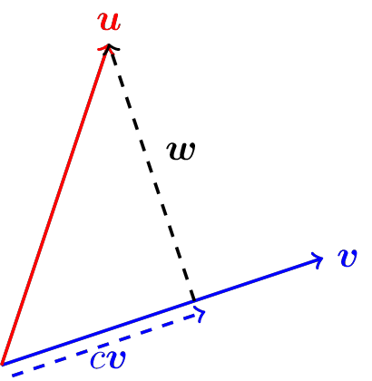
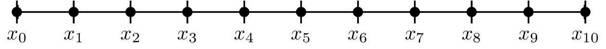
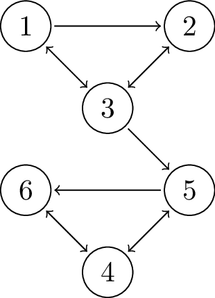
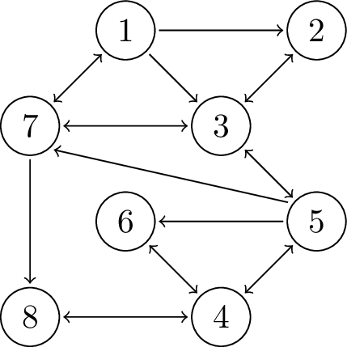

Appendix C — Linear Algebra
You cannot learn too much linear algebra.
– Every mathematician
C.1 Intro to Numerical Linear Algebra
The preceding comment says it all – linear algebra is the most important of all of the mathematical tools that you can learn as a practitioner of the mathematical sciences. The theorems, proofs, conjectures, and big ideas in almost every other mathematical field find their roots in linear algebra. Numerical Linear Algebra is the study of algorithms for solving problems in linear algebra. This subject has a somewhat different flavour than the numerical analysis we are studying in the main text and hence we present it as an optional appendix.
Our goal in this appendix is to explore numerical algorithms for the primary questions of linear algebra:
solving systems of equations,
finding eigenvalue-eigenvector pairs for a matrix.
Take careful note that in our current digital age, numerical linear algebra and its fast algorithms are behind the scenes for wide varieties of computing applications. Applications of numerical linear algebra include:
building neural networks and AI algorithms,
determining the most important web page in a Google search,
modelling realistic 3D environments in video games,
digital image processing,
and many many more.
What’s more, researchers have found provably optimal ways to perform most of the typical tasks of linear algebra so most scientific software works very well and very quickly with linear algebra.
C.2 Notation
Throughout this chapter we will use the following notation conventions.
A bold mathematical symbol such as \(\boldsymbol{x}\) or \(\boldsymbol{u}\) will represent a vector.
If \(\boldsymbol{u}\) is a vector then \(u_j\) will be the \(j^{th}\) entry of the vector.
Vectors will typically be written vertically with parenthesis as delimiters such as \[\begin{equation} \boldsymbol{u} = \begin{pmatrix} 1\\2\\3 \end{pmatrix}. \end{equation}\]
Two bold symbols separated by a centred dot such as \(\boldsymbol{u} \cdot \boldsymbol{v}\) will represent the dot product of two vectors.
A capital mathematical symbol such as \(A\) or \(X\) will represent a matrix
If \(A\) is a matrix then \(A_{ij}\) will be the element in the \(i^{th}\) row and \(j^{th}\) column of the matrix.
A matrix will typically be written with parenthesis as delimiters such as \[\begin{equation} A = \begin{pmatrix} 1 & 2 & 3 \\ 4 & 5 & \pi \end{pmatrix}. \end{equation}\]
The juxtaposition of a capital symbol and a bold symbol such as \(A\boldsymbol{x}\) will represent matrix-vector multiplication.
A lower case or Greek mathematical symbol such as \(x\), \(c\), or \(\lambda\) will represent a scalar.
The scalar field of real numbers is given as \(\mathbb{R}\) and the scalar field of complex numbers is given as \(\mathbb{C}\).
The symbol \(\mathbb{R}^n\) represents the collection of all \(n\)-dimensional vectors where the elements are drawn from the real numbers.
The symbol \(\mathbb{C}^n\) represents the collection of all \(n\)-dimensional vectors where the elements are drawn from the complex numbers.
It is an important part of learning to read and write linear algebra to give special attention to the symbolic language so you can communicate your work easily and efficiently.
C.3 Vectors and Matrices in Python
We first need to understand how Python’s numpy library builds and stores vectors and matrices. The following exercises will give you some experience building and working with these data structures and will point out some common pitfalls that mathematicians fall into when using Python for linear algebra.
Example C.1 (numpy Arrays) In Python you can build a list using square brackets such as [1,2,3]. This is called a “Python list” and is NOT a vector in the way that we think about it mathematically. It is simply an ordered collection of objects. To build mathematical vectors in Python we need to use numpy arrays with np.array(). For example, the vector \[\begin{equation}
\boldsymbol{u} = \begin{pmatrix} 1\\2\\3\end{pmatrix}
\end{equation}\] would be built with the following code.
import numpy as np
u = np.array([1,2,3])
print(u)Notice that Python defines the vector u as a matrix with only one dimension. You can see that in the following code.
import numpy as np
u = np.array([1,2,3])
print("The length of the u vector is \n",len(u))
print("The shape of the u vector is \n",u.shape)Example C.2 (numpy Matrices) In numpy, a matrix is validly built as a list of lists. For example, the matrix \[\begin{equation}
A = \begin{pmatrix} 1 & 2 & 3 \\ 4 & 5 & 6 \\ 7 & 8 & 9 \end{pmatrix}
\end{equation}\] is defined using np.array() where each row is an individual list, and the matrix is a collection of these lists.
import numpy as np
A = np.array([[1,2,3],[4,5,6],[7,8,9]])
print(A)Moreover, we can extract the shape, the number of rows, and the number of columns of \(A\) using the A.shape command. To be a bit more clear on this one we will use the matrix \[\begin{equation}
A = \begin{pmatrix} 1 & 2 & 3 \\ 4 & 5 & 6 \end{pmatrix}
\end{equation}\]
import numpy as np
A = np.array([[1,2,3],[4,5,6]])
print("The shape of the A matrix is \n",A.shape)
print("Number of rows in A is \n",A.shape[0])
print("Number of columns in A is \n",A.shape[1])Example C.3 (Row and Column Vectors in Python) You can more specifically build row or column vectors in Python using the np.array() command and then only specifying one row or column. But take careful note that numpy treats a 1D array (like np.array([1,2,3])) differently from a 2D array (like np.array([[1,2,3]])). For example, if you want the vectors \[\begin{equation}
\boldsymbol{u} = \begin{pmatrix} 1\\2\\3\end{pmatrix} \quad \text{and} \quad \boldsymbol{v} = \begin{pmatrix} 4 & 5 & 6 \end{pmatrix}
\end{equation}\] then we would use the following Python code.
import numpy as np
u = np.array([[1],[2],[3]])
print("The column vector u is \n",u)
v = np.array([[1,2,3]])
print("The row vector v is \n",v)Alternatively, if you want to define a column vector you can define a row vector (since there are far fewer brackets to keep track of) and then transpose the matrix to turn it into a column. Note that the .transpose() method (or .T) only swaps dimensions; it won’t turn a 1D array into a 2D column vector unless it was already 2D.
import numpy as np
u = np.array([[1,2,3]])
u = u.transpose()
print("The column vector u is \n",u)Example C.4 (Matrix Indexing) Python indexes all arrays, vectors, lists, and matrices starting from index 0. Let us get used to this fact.
Consider the matrix \(A\) defined in the previous problem. Mathematically we know that the entry in row 1 column 1 is a 1, the entry in row 1 column 2 is a 2, and so on. However, with Python we need to shift the way that we enumerate the rows and columns of a matrix. Hence we would say that the entry in row 0 column 0 is a 1, the entry in row 0 column 1 is a 2, and so on.
Mathematically we can view all Python matrices as follows. If \(A\) is an \(n \times n\) matrix then \[\begin{equation} A = \begin{pmatrix} A_{0,0} & A_{0,1} & A_{0,2} & \cdots & A_{0,n-1} \\ A_{1,0} & A_{1,1} & A_{1,2} & \cdots & A_{1,n-1} \\ \vdots & \vdots & \vdots & \ddots & \vdots \\ A_{n-1,0} & A_{n-1,1} & A_{n-1,2} & \cdots & A_{n-1,n-1} \end{pmatrix} \end{equation}\]
Similarly, we can view all vectors as follows. If \(\boldsymbol{u}\) is an \(n \times 1\) vector then \[\begin{equation} \boldsymbol{u} = \begin{pmatrix} u_0 \\ u_1 \\ \vdots \\ u_{n-1} \end{pmatrix} \end{equation}\]
The following code should help to illustrate this indexing convention.
import numpy as np
A = np.array([[1,2,3],[4,5,6],[7,8,9]])
print("Entry in row 0 column 0 is",A[0,0])
print("Entry in row 0 column 1 is",A[0,1])
print("Entry in the bottom right corner",A[2,2])Exercise C.1 Build your own matrix in Python and practice choosing individual entries from the matrix.
Example C.5 (Matrix Slicing) The last thing that we need to be familiar with is slicing a matrix. The term “slicing” generally refers to pulling out individual rows, columns, entries, or blocks from a list, array, or matrix in Python. Examine the code below to see how to slice parts out of a numpy matrix.
import numpy as np
A = np.array([[1,2,3],[4,5,6],[7,8,9]])
print(A)
print("The first column of A is \n",A[:,0])
print("The second row of A is \n",A[1,:])
print("The top left 2x2 sub matrix of A is \n",A[:-1,:-1])
print("The bottom right 2x2 sub matrix of A is \n",A[1:,1:])
u = np.array([1,2,3,4,5,6])
print("The first 3 entries of the vector u are \n",u[:3])
print("The last entry of the vector u is \n",u[-1])
print("The last two entries of the vector u are \n",u[-2:])Exercise C.2 Define the matrix \(A\) and the vector \(u\) in Python. Then perform all of the tasks below. \[\begin{equation} A = \begin{pmatrix} 1 & 3 & 5 & 7 \\ 2 & 4 & 6 & 8 \\ -3 & -2 & -1 & 0 \end{pmatrix} \quad \text{and} \quad \boldsymbol{u} = \begin{pmatrix} 10\\20\\30 \end{pmatrix} \end{equation}\]
Print the matrix \(A\), the vector \(\boldsymbol{u}\), the shape of \(A\), and the shape of \(\boldsymbol{u}\).
Print the first column of \(A\).
Print the first two rows of \(A\).
Print the first two entries of \(\boldsymbol{u}\).
Print the last two entries of \(\boldsymbol{u}\).
Print the bottom left \(2 \times 2\) submatrix of \(A\).
Print the middle two elements of the middle row of \(A\).
C.4 Matrix and Vector Operations
Now let us start doing some numerical linear algebra. We start our discussion with the basics: the dot product and matrix multiplication. The numerical routines in Python’s numpy packages are designed to do these tasks in very efficient ways but it is a good coding exercise to build your own dot product and matrix multiplication routines just to further cement the way that Python deals with these data structures and to remind you of the mathematical algorithms. What you will find in numerical linear algebra is that the indexing and the housekeeping in the codes is the hardest part. So why do not we start “easy.”
C.4.1 The Dot Product
Exercise C.3 This problem is meant to jog your memory about dot products, how to compute them, and what you might use them for. If your linear algebra is a bit rusty then read ahead a bit and then come back to this problem.
Consider two vectors \(\boldsymbol{u}\) and \(\boldsymbol{v}\) defined as \[\begin{equation} \boldsymbol{u} = \begin{pmatrix} 1 \\ 2 \end{pmatrix} \quad \text{and} \quad \boldsymbol{v} = \begin{pmatrix} 3\\4 \end{pmatrix}. \end{equation}\]
Draw a picture showing both \(\boldsymbol{u}\) and \(\boldsymbol{v}\).
What is \(\boldsymbol{u} \cdot \boldsymbol{v}\)?
What is \(\|\boldsymbol{u}\|\)?
What is \(\|\boldsymbol{v}\|\)?
What is the angle between \(\boldsymbol{u}\) and \(\boldsymbol{v}\)?
Give two reasons why we know that \(\boldsymbol{u}\) is not perpendicular to \(\boldsymbol{v}\).
What is the scalar projection of \(\boldsymbol{u}\) onto \(\boldsymbol{v}\)? Draw this scalar projections on your picture from part (1).
What is the scalar projection of \(\boldsymbol{v}\) onto \(\boldsymbol{u}\)? Draw this scalar projections on your picture from part (1).
Now let us get the formal definitions of the dot product on the table.
Definition C.1 (Dot product) The dot product of two vectors \(\boldsymbol{u}, \boldsymbol{v} \in \mathbb{R}^n\) is \[\begin{equation} \boldsymbol{u} \cdot \boldsymbol{v} = \sum_{j=1}^n u_j v_j. \end{equation}\] Without summation notation the dot product of two vectors is , \[\begin{equation} \boldsymbol{u} \cdot \boldsymbol{v} = u_1 v_1 + u_2 v_2 + \cdots + u_n v_n. \end{equation}\]
You may also recall that the dot product of two vectors is given geometrically as \[\begin{equation} \boldsymbol{u} \cdot \boldsymbol{v} = \|\boldsymbol{u} \| \|\boldsymbol{v}\| \cos \theta \end{equation}\] where \(\|\boldsymbol{u}\|\) and \(\|\boldsymbol{v}\|\) are the magnitudes (or lengths) of \(\boldsymbol{u}\) and \(\boldsymbol{v}\) respectively, and \(\theta\) is the angle between the two vectors. In physical applications the dot product is often used to find the angle between two vectors (e.g. between two forces). Hence, the last form of the dot product is often rewritten as \[\begin{equation} \theta = \cos^{-1}\left( \frac{\boldsymbol{u} \cdot \boldsymbol{v}}{ \|\boldsymbol{u} \| \| \boldsymbol{v} \|} \right). \end{equation}\]
Definition C.2 (Magnitude of a Vector) The magnitude of a vector \(\boldsymbol{u} \in \mathbb{R}^n\) is defined as 1 \[\begin{equation} \| \boldsymbol{u} \| = \sqrt{\boldsymbol{u} \cdot \boldsymbol{u}}. \end{equation}\]
Exercise C.4 Write a Python function that accepts two vectors (defined as numpy arrays) and returns the dot product. Write this code without the use any loops.
import numpy as np
def myDotProduct(u,v):
return # the dot product formula uses a product inside a sum.Exercise C.5 Test your myDotProduct() function on several dot products to make sure that it works. Example code to find the dot product between \[\begin{equation}
\boldsymbol{u} = \begin{pmatrix} 1 \\ 2\\ 3\end{pmatrix} \quad \text{and} \quad \boldsymbol{v} = \begin{pmatrix} 4\\5\\6\end{pmatrix}
\end{equation}\] is given below. Test your code on other vectors. Then implement an error catch into your code to catch the case where the two input vectors are not the same size. You will want to use the len() command to find the length of the vectors.
u = np.array([1,2,3])
v = np.array([4,5,6])
myDotProduct(u,v)Exercise C.6 Try sending Python lists instead of numpy arrays into your myDotProduct function. What happens? Why does it happen? What is the cautionary tale here? Modify your myDotProduct() function one more time so that it starts by converting the input vectors into numpy arrays.
u = [1,2,3]
v = [4,5,6]
myDotProduct(u,v)Exercise C.7 The numpy library in Python has a built-in command for doing the dot product: np.dot(). Test the np.dot() command and be sure that it does the same thing as your myDotProduct() function.
C.4.2 Matrix Multiplication
Next we will blow the dust off of your matrix multiplication skills.
Exercise C.8 Verify that the product of \(A\) and \(B\) is indeed what we show below. Work out all of the details by hand. \[\begin{equation} A = \begin{pmatrix} 1 & 2 \\ 3 & 4 \\ 5 & 6 \end{pmatrix} \qquad B = \begin{pmatrix} 7 & 8 & 9 \\ 10 & 11 & 12 \end{pmatrix} \end{equation}\]
\[\begin{equation} AB = \begin{pmatrix} 27 & 30 & 33 \\ 61 & 68 & 75 \\ 95 & 106 & 117 \end{pmatrix} \end{equation}\]
Now that you have practised the algorithm for matrix multiplication we can formalize the definition and then turn the algorithm into a Python function.
Definition C.3 (Matrix Multiplication) If \(A\) and \(B\) are matrices with \(A \in \mathbb{R}^{n \times p}\) and \(B \in \mathbb{R}^{p \times m}\) then the product \(AB\) is defined as \[\begin{equation} \left( AB \right)_{ij} = \sum_{k=1}^p A_{ik} B_{kj}. \end{equation}\]
A moment’s reflection reveals that each entry in the matrix product is actually a dot product, \[\begin{equation} \left( \text{Entry in row $i$ column $j$ of $AB$} \right) = \left( \text{Row $i$ of matrix $A$} \right) \cdot \left( \text{Column $j$ of matrix $B$} \right). \end{equation}\]
Exercise C.9 The definition of matrix multiplication above contains the cryptic phrase a moment’s reflection reveals that each entry in the matrix product is actually a dot product. Let us go back to the matrices \(A\) and \(B\) defined in Exercise C.8 above and re-evaluate the matrix multiplication algorithm to make sure that you see each entry as the end result of a dot product.
We want to find the product of matrices \(A\) and \(B\) using dot products. \[\begin{equation} A = \begin{pmatrix} 1 & 2 \\ 3 & 4 \\ 5 & 6 \end{pmatrix} \qquad B = \begin{pmatrix} 7 & 8 & 9 \\ 10 & 11 & 12 \end{pmatrix} \end{equation}\]
Why will the product \(AB\) clear be a \(3 \times 3\) matrix?
When we do matrix multiplication we take the product of a row from the first matrix times a column from the second matrix … at least that’s how many people think of it when they perform the operation by hand.
- The rows of \(A\) can be written as the vectors \[\begin{equation} \boldsymbol{a}_0 = \begin{pmatrix} 1 & 2 \end{pmatrix} \end{equation}\]
\[\begin{equation} \boldsymbol{a}_1 = \begin{pmatrix} \underline{\hspace{0.5in}} & \underline{\hspace{0.5in}} \end{pmatrix} \end{equation}\]
\[\begin{equation} \boldsymbol{a}_2 = \begin{pmatrix} \underline{\hspace{0.5in}} & \underline{\hspace{0.5in}} \end{pmatrix} \end{equation}\]
- The columns of \(B\) can be written as the vectors \[\begin{equation} \boldsymbol{b}_0 = \begin{pmatrix} 7 \\ 10 \end{pmatrix} \end{equation}\]
\[\begin{equation} \boldsymbol{b}_1 = \begin{pmatrix} \underline{\hspace{0.5in}} \\ \underline{\hspace{0.5in}} \end{pmatrix} \end{equation}\]
\[\begin{equation} \boldsymbol{b}_2 = \begin{pmatrix} \underline{\hspace{0.5in}} \\ \underline{\hspace{0.5in}} \end{pmatrix} \end{equation}\]
Now let us write each entry in the product \(AB\) as a dot product. \[\begin{equation} AB = \begin{pmatrix} \boldsymbol{a}_0 \cdot \boldsymbol{b}_0 & \underline{\hspace{0.25in}} \cdot \underline{\hspace{0.25in}} & \underline{\hspace{0.25in}} \cdot \underline{\hspace{0.25in}} \\ \underline{\hspace{0.25in}} \cdot \underline{\hspace{0.25in}} & \underline{\hspace{0.25in}} \cdot \underline{\hspace{0.25in}} & \underline{\hspace{0.25in}} \cdot \underline{\hspace{0.25in}} \\ \underline{\hspace{0.25in}} \cdot \underline{\hspace{0.25in}} & \underline{\hspace{0.25in}} \cdot \underline{\hspace{0.25in}} & \underline{\hspace{0.25in}} \cdot \underline{\hspace{0.25in}} \end{pmatrix} \end{equation}\]
Verify that you get \[\begin{equation} AB = \begin{pmatrix} 27 & 30 & 33 \\ 61 & 68 & 75 \\ 95 & 106 & 117 \end{pmatrix} \end{equation}\] when you perform all of the dot products from part (3).
Exercise C.10 The observation that matrix multiplication is just a bunch of dot products is what makes the code for doing matrix multiplication very fast and very streamlined. We want to write a Python function that accepts two numpy matrices and returns the product of the two matrices. Inside the code we will leverage the np.dot() command to do the appropriate dot products.
Partial code is given below. Fill in all of the details and give ample comments showing what each line does.
import numpy as np
def myMatrixMult(A,B):
# Get the shapes of the matrices A and B.
# Then write an if statement that catches size mismatches
# in the matrices. Next build a zeros matrix that is the
# correct size for the product of A and B.
AB = ???
# AB is a zeros matix that will be filled with the values
# from the product
#
# Next we do a double for-loop that loops through all of
# the indices of the product
for i in range(n): # loop over the rows of AB
for j in range(m): # loop over the columns of AB
# use the np.dot() command to take the dot product
AB[i,j] = ???
return ABUse the following test code to determine if you actually get the correct matrix product out of your code.
``` python
A = np.array([[1,2],[3,4],[5,6]])
B = np.array([[7,8,9],[10,11,12]])
AB = myMatrixMult(A,B)
print(AB)Exercise C.11 Try your myMatrixMult() function on several other matrix multiplication problems.
Exercise C.12 Build in an error catch so that your myMatrixMult() function catches when the input matrices do not have compatible sizes for multiplication. Write your code so that it returns an appropriate error message in this special case.
Now that you have been through the exercise of building a matrix multiplication function we will admit that using it inside larger coding problems would be a bit cumbersome (and perhaps annoying). It would be nice to just type @ and have Python just know that you mean to do matrix multiplication. This is where numpy arrays come in quite handy.
Exercise C.13 (Matrix Multiplication with Python) Python will handle matrix multiplication easily so long as the matrices are defined as numpy arrays. For example, with the matrices \(A\) and \(B\) from above if you can just type A @ B (or np.dot(A, B)) in Python and you will get the correct result. Pretty nice!! Let us take another moment to notice, though, that regular Python lists do not behave in the same way. Can you guess what happens if you run the following Python code? (Note: * does strictly element-wise multiplication for numpy arrays, which we will see in a moment).
A = [[1,2],[3,4],[5,6]] # a Python list of lists
B = [[7,8,9],[10,11,12]] # a Python list of lists
A @ BExample C.6 (Element-by-Element Multiplication) Sometimes it is convenient to do naive multiplication of matrices when you code. That is, if you have two matrices that are the same size, “naive multiplication” would just line up the matrices on top of each other and multiply the corresponding entries.2 In Python you can do this with the * operator (or np.multiply()). The code below demonstrates this tool with the matrices \[\begin{equation}
A = \begin{pmatrix} 1 & 2 \\ 3 & 4 \\ 5 & 6 \end{pmatrix} \quad \text{and} \quad B = \begin{pmatrix} 7 & 8 \\ 9 & 10 \\ 11 & 12 \end{pmatrix}.
\end{equation}\]
(Note that the product \(AB\) does not make sense under the mathematical definition of matrix multiplication, but it does make sense in terms of element-by-element (“naive”) multiplication.)
import numpy as np
A = np.array([[1,2],[3,4],[5,6]])
B = np.array([[7,8],[9,10],[11,12]])
print(A * B)The key takeaways for doing matrix multiplication in Python are as follows:
If you are doing linear algebra in Python then you should define vectors and matrices with
np.array().If your matrices are defined with
np.array()then@(ornp.dot()) does regular matrix multiplication and*does element-by-element multiplication.
C.5 The LU Factorization
One of the many classic problems of linear algebra is to solve the linear system \(A \boldsymbol{x} = \boldsymbol{b}\) where \(A\) is a matrix of coefficients and \(\boldsymbol{b}\) is a vector of right-hand sides. You likely recall your go-to technique for solving systems was row reduction (or Gaussian Elimination). Furthermore, you likely rarely actually did row reduction by hand, and instead you relied on a computer to do most of the computations for you. Just what was the computer doing, exactly? Do you think that it was actually following the same algorithm that you did by hand?
C.5.1 A Recap of Row Reduction
Let us blow the dust off your row reduction skills before we look at something better.
Exercise C.14 Solve the following system of equations by hand. \[\begin{equation} \begin{array}{rl} x_0 + 2x_1 + 3x_2 &= 1 \\ 4x_0 + 5x_1 + 6x_2 &= 0 \\ 7x_0 + 8x_1 &= 2 \end{array} \end{equation}\] Note that the system of equations can also be written in the matrix form \[\begin{equation} \begin{pmatrix} 1 & 2 & 3 \\ 4 & 5 & 6 \\ 7 & 8 & 0 \end{pmatrix} \begin{pmatrix} x_0 \\ x_1 \\ x_2 \end{pmatrix} = \begin{pmatrix} 1 \\ 0 \\ 2\end{pmatrix} \end{equation}\]
If you need a nudge to get started then jump ahead to the next problem.
Exercise C.15 We want to solve the system of equations \[\begin{equation} \begin{pmatrix} 1 & 2 & 3 \\ 4 & 5 & 6 \\ 7 & 8 & 0 \end{pmatrix} \begin{pmatrix} x_0 \\ x_1 \\ x_2 \end{pmatrix} = \begin{pmatrix} 1 \\ 0 \\ 2\end{pmatrix} \end{equation}\]
Row Reduction Process:
Note: Throughout this discussion we use Python-type indexing so the rows and columns are enumerated starting at 0. That is to say, we will talk about row 0, row 1, and row 2 of a matrix instead of rows 1, 2, and 3.
Augment the coefficient matrix and the vector on the right-hand side to get \[\begin{equation} \left( \begin{array}{ccc|c} 1 & 2 & 3 & 1 \\ 4 & 5 & 6 & 0 \\ 7 & 8 & 0 & 2 \end{array} \right) \end{equation}\]
The goal of row reduction is to perform elementary row operations until our augmented matrix gets to (or at least gets as close as possible to) \[\begin{equation} \left( \begin{array}{ccc|c} 1 & 0 & 0 & \star \\ 0 & 1 & 0 & \star \\ 0 & 0 & 1 & \star \end{array} \right) \end{equation}\] The allowed elementary row operations are:
We are allowed to scale any row.
We can add two rows.
We can interchange two rows.
We are going to start with column 0. We already have the “\(1\)” in the top left corner so we can use it to eliminate all of the other values in the first column of the matrix.
For example, if we multiply the \(0^{th}\) row by \(-4\) and add it to the first row we get \[\begin{equation} \left( \begin{array}{ccc|c} 1 & 2 & 3 & 1 \\ 0 & -3 & -6 & -4 \\ 7 & 8 & 0 & 2 \end{array} \right). \end{equation}\]
Multiply row 0 by a scalar and add it to row 2. Your end result should be \[\begin{equation} \left( \begin{array}{ccc|c} 1 & 2 & 3 & 1 \\ 0 & -3 & -6 & -4 \\ 0 & -6 & -21 & -5 \end{array} \right). \end{equation}\] What did you multiply by? Why?
Now we should deal with column 1.
We want to get a 1 in row 1 column 1. We can do this by scaling row 1. What did you scale by? Why? Your end result should be \[\begin{equation} \left( \begin{array}{ccc|c} 1 & 2 & 3 & 1 \\ 0 & 1 & 2 & \frac{4}{3} \\ 0 & -6 & -21 & -5 \end{array} \right). \end{equation}\]
Now scale row 1 by something and add it to row 0 so that the entry in row 0 column 1 becomes a 0.
Next scale row 1 by something and add it to row 2 so that the entry in row 2 column 1 becomes a 0.
At this point you should have the augmented system \[\begin{equation} \left( \begin{array}{ccc|c} 1 & 0 & -1 & -\frac{5}{3} \\ 0 & 1 & 2 & \frac{4}{3} \\ 0 & 0 & -9 & 3 \end{array} \right). \end{equation}\]
Finally we need to work with column 2.
Make the value in row 2 column 2 a 1 by scaling row 2. What did you scale by? Why?
Scale row 2 by something and add it to row 1 so that the entry in row 1 column 2 becomes a 0. What did you scale by? Why?
Scale row 2 by something and add it to row 0 so that the entry in row 0 column 2 becomes a 0. What did you scale by? Why?
By the time you have made it this far you should have the system \[\begin{equation} \left( \begin{array}{ccc|c} 1 & 0 & 0 & -2 \\ 0 & 1 & 0 & 2 \\ 0 & 0 & 1 & -\frac{1}{3} \end{array} \right) \end{equation}\] and you should be able to read off the solution to the system.
You should verify your answer in two different ways:
If you substitute your values into the original system then all of the equal signs should be true. Verify this.
If you substitute your values into the matrix equation and perform the matrix-vector multiplication on the left-hand side of the equation you should get the right-hand side of the equation. Verify this.
Exercise C.16 Summarize the process for doing Gaussian Elimination to solve a square system of linear equations.
C.5.2 The LU Decomposition
You may have used the rref() command either on a calculator in other software to perform row reduction in the past. You will be surprised to learn that there is no rref() command in Python’s numpy library! That’s because there are far more efficient and stable ways to solve a linear system on a computer. There is an rref command in Python’s sympy (symbolic Python) library, but given that it works with symbolic algebra it is quite slow.
In solving systems of equations we are interested in equations of the form \(A \boldsymbol{x} = \boldsymbol{b}\). Notice that the \(\boldsymbol{b}\) vector is just along for the ride, so to speak, in the row reduction process since none of the values in \(\boldsymbol{b}\) actually cause you to make different decisions in the row reduction algorithm. Hence, we only really need to focus on the matrix \(A\). Furthermore, let us change our awfully restrictive view of always seeking a matrix of the form \[\begin{equation} \left( \begin{array}{cccc|c} 1 & 0 & \cdots & 0 & \star \\ 0 & 1 & \cdots & 0 & \star \\ \vdots & \vdots & \ddots & \vdots & \vdots \\ 0 & 0 & \cdots & 1 & \star \end{array} \right) \end{equation}\] and instead say:
What if we just row reduce until the system is simple enough to solve by hand?
That’s what the next several exercises are going to lead you to. Our goal here is to develop an algorithm that is fast to implement on a computer and simultaneously performs the same basic operations as row reduction for solving systems of linear equations.
Exercise C.17 Let \(A\) be defined as \[\begin{equation} A = \begin{pmatrix} 1 & 2 & 3 \\ 4 & 5 & 6 \\ 7 & 8 & 0 \end{pmatrix}. \end{equation}\]
The first step in row reducing \(A\) would be to multiply row 0 by \(-4\) and add it to row 1. Do this operation by hand so that you know what the result is supposed to be. Check out the following amazing observation. Define the matrix \(L_1\) as follows: \[\begin{equation} L_1 = \begin{pmatrix} 1 & 0 & 0 \\ -4 & 1 & 0 \\ 0 & 0 & 1 \end{pmatrix}. \end{equation}\] Now multiply \(L_1\) and \(A\). \[\begin{equation} L_1 A = \begin{pmatrix} \underline{\hspace{0.25in}} & \underline{\hspace{0.25in}} & \underline{\hspace{0.25in}} \\ \underline{\hspace{0.25in}} & \underline{\hspace{0.25in}} & \underline{\hspace{0.25in}} \\ \underline{\hspace{0.25in}} & \underline{\hspace{0.25in}} & \underline{\hspace{0.25in}} \end{pmatrix} \end{equation}\] What just happened?!
Let us do it again. The next step in the row reduction of your result from part (1) would be to multiply row 0 by \(-7\) and add to row 2. Again, do this by hand so you know what the result should be. Then define the matrix \(L_2\) as \[\begin{equation} L_2 = \begin{pmatrix} 1 & 0 & 0 \\ 0 & 1 & 0 \\ -7 & 0 & 1 \end{pmatrix} \end{equation}\] and find the product \(L_2 \left( L_1 A \right)\). \[\begin{equation} L_2 \left( L_1 A \right) = \begin{pmatrix} \underline{\hspace{0.25in}} & \underline{\hspace{0.25in}} & \underline{\hspace{0.25in}} \\ \underline{\hspace{0.25in}} & \underline{\hspace{0.25in}} & \underline{\hspace{0.25in}} \\ \underline{\hspace{0.25in}} & \underline{\hspace{0.25in}} & \underline{\hspace{0.25in}} \end{pmatrix} \end{equation}\] Pure insanity!!
Now let us say that you want to make the entry in row 2 column 1 into a 0 by scaling row 1 by something and then adding to row 2. Determine what the scalar would be and then determine which matrix, call it \(L_3\), would do the trick so that \(L_3 (L_2 L_1 A)\) would be the next row reduced step. \[\begin{equation} L_3 = \begin{pmatrix} 1 & \underline{\hspace{0.25in}} & \underline{\hspace{0.25in}} \\ \underline{\hspace{0.25in}} & 1 & \underline{\hspace{0.25in}} \\ \underline{\hspace{0.25in}} & \underline{\hspace{0.25in}} & 1 \end{pmatrix} \end{equation}\]
\[\begin{equation} L_3 \left( L_2 L_1 A \right) = \begin{pmatrix} \underline{\hspace{0.25in}} & \underline{\hspace{0.25in}} & \underline{\hspace{0.25in}} \\ \underline{\hspace{0.25in}} & \underline{\hspace{0.25in}} & \underline{\hspace{0.25in}} \\ \underline{\hspace{0.25in}} & \underline{\hspace{0.25in}} & \underline{\hspace{0.25in}} \end{pmatrix} \end{equation}\]
Exercise C.18 Apply the same idea from the previous problem to do the first three steps of row reduction to the matrix \[\begin{equation} A = \begin{pmatrix} 2 & 6 & 9 \\ -6 & 8 & 1 \\ 2 & 2 & 10 \end{pmatrix} \end{equation}\]
Exercise C.19 Now let us make a few observations about the two previous problems.
What will multiplying \(A\) by a matrix of the form \[\begin{equation} \begin{pmatrix} 1 & 0 & 0 \\ c & 1 & 0 \\ 0 & 0 & 1 \end{pmatrix} \end{equation}\] do?
What will multiplying \(A\) by a matrix of the form \[\begin{equation} \begin{pmatrix} 1 & 0 & 0 \\ 0 & 1 & 0 \\ c & 0 & 1 \end{pmatrix} \end{equation}\] do?
What will multiplying \(A\) by a matrix of the form \[\begin{equation} \begin{pmatrix} 1 & 0 & 0 \\ 0 & 1 & 0 \\ 0 & c & 1 \end{pmatrix} \end{equation}\] do?
More generally: If you wanted to multiply row \(j\) of an \(n\times n\) matrix by \(c\) and add it to row \(k\), that is the same as multiplying by what matrix?
Exercise C.20 After doing all of the matrix products, \(L_3 L_2 L_1 A\), the resulting matrix will have zeros in the entire lower triangle. That is, all of the non-zero entries of the resulting matrix will be on the main diagonal or above. We call this matrix \(U\), for upper-triangular. Hence, we have formed a matrix \[\begin{equation} L_3 L_2 L_1 A = U \end{equation}\] and if we want to solve for \(A\) we would get \[\begin{equation} A = (\underline{\hspace{0.5in}})^{-1} (\underline{\hspace{0.5in}})^{-1} (\underline{\hspace{0.5in}})^{-1} U \end{equation}\] (Take care that everything is in the right order in your answer.)
Exercise C.21 It would be nice, now, if the inverses of the \(L\) matrices were easy to find. Use np.linalg.inv() to directly compute the inverse of \(L_1\), \(L_2\), and \(L_3\) for each of the example matrices. Then complete the statement: If \(L_k\) is an identity matrix with some non-zero \(c\) in row \(i\) and column \(j\) then \(L_k^{-1}\) is what matrix?
Exercise C.22 We started this discussion with \(A\) as \[\begin{equation} A = \begin{pmatrix} 1 & 2 & 3 \\ 4 & 5 & 6 \\ 7 & 8 & 0 \end{pmatrix} \end{equation}\] and we defined \[\begin{equation} L_1 = \begin{pmatrix} 1 & 0 & 0 \\ -4 & 1 & 0 \\ 0 & 0 & 1 \end{pmatrix}, \quad L_2 = \begin{pmatrix} 1 & 0 & 0 \\ 0 & 1 & 0 \\ -7 & 0 & 1 \end{pmatrix}, \quad \text{and} \quad L_3 = \begin{pmatrix} 1 & 0 & 0 \\ 0 & 1 & 0 \\ 0 & -2 & 1 \end{pmatrix}. \end{equation}\] Based on your answer to the previous exercises we know that \[\begin{equation} A = L_1^{-1} L_2^{-1} L_3^{-1} U. \end{equation}\] Explicitly write down the matrices \(L_1^{-1}\), \(L_2^{-1}\), and \(L_3^{-1}\).
Now explicitly find the product \(L_1^{-1} L_2^{-1} L_3^{-1}\) and call this product \(L\). Verify that \(L\) itself is also a lower-triangular matrix with ones on the main diagonal. Moreover, take note of exactly the form of the matrix. The answer should be super surprising to you!!
Throughout all of the preceding exercises, our final result is that we have factored the matrix \(A\) into the product of a lower-triangular matrix and an upper-triangular matrix. Stop and think about that for a minute … we just factored a matrix!
Let us return now to our discussion of solving the system of equations \(A \boldsymbol{x} = \boldsymbol{b}\). If \(A\) can be factored into \(A = LU\) then the system of equations can be rewritten as \(LU \boldsymbol{x} = \boldsymbol{b}\). As we will see in the next subsection, solving systems of equations with triangular matrices is super fast and relatively simple! Hence, we have partially achieved our modified goal of reducing the row reduction into some simpler case.3
It remains to implement the \(LU\) decomposition (also called the \(LU\) factorization) in Python.
Example C.7 (The LU Factorization) The following Python function takes a square matrix \(A\) and outputs the matrices \(L\) and \(U\) such that \(A = LU\). The entire code is given to you. It will be up to you in the next exercise to pick apart every step of the function.
def myLU(A):
n = A.shape[0] # get the dimension of the matrix A
L = np.eye(n) # Build the identity part of L
U = np.copy(A) # start the U matrix as a copy of A
for j in range(0,n-1):
for i in range(j+1,n):
mult = U[i,j] / U[j,j]
U[i, :] = U[i, :] - mult * U[j,:]
L[i,j] = mult
return L,UExercise C.23 Go to Example C.7 and go through every iteration of every loop by hand starting with the matrix \[\begin{equation} A = \begin{pmatrix} 1 & 2 & 3 \\ 4 & 5 & 6 \\ 7 & 8 & 0 \end{pmatrix}. \end{equation}\] Give details of what happens at every step of the algorithm. I will get you started.
n=3,Lstarts as an identity matrix of the correct size, andUstarts as a copy ofA.Start the outer loop:
j=0: (jis the counter for the column)Start the inner loop:
i=1: (iis the counter for the row)mult = A[1,0] / A[0,0]somult\(=4/1\).A[1, 1:3] = A[1, 1:3] - 4 * A[0,1:3]. Translated, this states that columns 1 and 2 of matrix \(A\) took their original value minus 4 times the corresponding values in row 0.U[1, 1:3] = A[1, 1:3]. Now we replace the locations in \(U\) with the updated information from our first step of row reduction.L[1,0]=4. We now fill the \(L\) matrix with the proper value.U[1,0]=0. Finally, we zero out the lower triangle piece of the \(U\) matrix which we have now taken care of.
i=2:- … keep going from here …
Exercise C.24 Apply your new myLU code to other square matrices and verify that indeed \(A\) is the product of the resulting \(L\) and \(U\) matrices. You can produce a random matrix with np.random.randn(n,n) where n is the number of rows and columns of the matrix. For example, np.random.randn(10,10) will produce a random \(10 \times 10\) matrix with entries chosen from the normal distribution with centre 0 and standard deviation 1. Random matrices are just as good as any other when testing your algorithm.
C.5.3 Solving Triangular Systems
We now know that row reduction is just a collection of sneaky matrix multiplications. In the previous exercises we saw that we can often turn our system of equations \(A \boldsymbol{x} = \boldsymbol{b}\) into the system \(LU \boldsymbol{x} = \boldsymbol{b}\) where \(L\) is lower-triangular (with ones on the main diagonal) and \(U\) is upper-triangular. But why was this important?
Well, if \(LU \boldsymbol{x} = \boldsymbol{b}\) then we can rewrite our system of equations as two systems: \[\begin{equation} \text{An upper-triangular system: } U \boldsymbol{x} = \boldsymbol{y} \end{equation}\] and \[\begin{equation} \text{A lower-triangular system: } L \boldsymbol{y} = \boldsymbol{b}. \end{equation}\]
In the following exercises we will devise algorithms for solving triangular systems. After we know how to work with triangular systems we will put all of the pieces together and show how to leverage the \(LU\) decomposition and the solution techniques for triangular systems to quickly and efficiently solve linear systems.
Exercise C.25 Outline a fast algorithm (without formal row reduction) for solving the lower-triangular system \[\begin{equation} \begin{pmatrix} 1 & 0 & 0 \\ 4 & 1 & 0 \\ 7 & 2 & 1 \end{pmatrix} \begin{pmatrix} y_0 \\ y_1 \\ y_2 \end{pmatrix} = \begin{pmatrix} 1 \\ 0 \\ 2\end{pmatrix}. \end{equation}\]
Exercise C.26 As a convention we will always write our lower-triangular matrices with ones on the main diagonal. Generalize your steps from the previous exercise so that you have an algorithm for solving any lower-triangular system. The most natural algorithm that most people devise here is called forward substitution.
Definition C.4 (Forward Substutition Algorithm (lsolve)) The general statement of the Forward Substitution Algorithm is:
Solve \(L \boldsymbol{y} = \boldsymbol{b}\) for \(\boldsymbol{y}\), where the matrix \(L\) is assumed to be lower-triangular with ones on the main diagonal.
The code below gives a full implementation of the Forward Substitution algorithm (also called the lsolve algorithm).
def lsolve(L, b):
# L is assumed to be a lower-triangular np.array
n = b.size # what does this do?
y = np.zeros(n) # what does this do?
for i in range(n):
# start the loop by assigning y to the value on the right
y[i] = b[i]
for j in range(i): # now adjust y
y[i] = y[i] - L[i,j] * y[j]
return(y)Exercise C.27 Work with your partner(s) to apply the lsolve() code to the lower-triangular system
\[\begin{equation} \begin{pmatrix} 1 & 0 & 0 \\ 4 & 1 & 0 \\ 7 & 2 & 1 \end{pmatrix} \begin{pmatrix} y_0 \\ y_1 \\ y_2 \end{pmatrix} = \begin{pmatrix} 1 \\ 0 \\ 2\end{pmatrix} \end{equation}\] by hand. It is incredibly important to implement numerical linear algebra routines by hand a few times so that you truly understand how everything is being tracked and calculated.
I will get you started.
Start:
i=0:y[0]=1sinceb[0]=1.The next
forloop does not start sincerange(0)has no elements (stop and think about why this is).
Next step in the loop:
i=1:y[1]is initialized as 0 sinceb[1]=0.Now we enter the inner loop at
j=0:- What does
y[1]become whenj=0?
- What does
Does
jincrement to anything larger?
Finally we increment
itoi=2:What does
y[2]get initialized to?Enter the inner loop at
j=0:- What does
y[2]become whenj=0?
- What does
Increment the inner loop to
j=1:- What does
y[2]become whenj=1?
- What does
Stop
Exercise C.28 Copy the code from Definition C.4 into a Python function but in your code write a comment on every line stating what it is doing. Write a test script that creates a lower-triangular matrix of the correct form and a right-hand side \(\boldsymbol{b}\) and solve for \(\boldsymbol{y}\). Test your code by giving it a large lower-triangular system.
Now that we have a method for solving lower-triangular systems, let us build a similar method for solving upper-triangular systems. The merging of lower and upper-triangular systems will play an important role in solving systems of equations.
Exercise C.29 Outline a fast algorithm (without formal row reduction) for solving the upper-triangular system \[\begin{equation} \begin{pmatrix} 1 & 2 & 3 \\ 0 & -3 & -6 \\ 0 & 0 & -9 \end{pmatrix} \begin{pmatrix} x_0 \\ x_1 \\ x_2 \end{pmatrix} = \begin{pmatrix} 1 \\ -4 \\ 3\end{pmatrix} \end{equation}\] The most natural algorithm that most people devise here is called backward substitution. Notice that in our upper-triangular matrix we do not have a diagonal containing all ones.
Exercise C.30 Generalize your backward substitution algorithm from the previous problem so that it could be applied to any upper-triangular system.
Definition C.5 (Backward Substitution Algorithm) The following code solves the problem \(U \boldsymbol{x} = \boldsymbol{y}\) using backward substitution. The matrix \(U\) is assumed to be upper-triangular. You will notice that most of this code is incomplete. It is your job to complete this code, and the next exercise should help.
def usolve(U, y):
# U is assumed to be an upper-triangular np.array
n = y.size
x = np.zeros(n)
for i in range( ??? ): # what should we be looping over?
x[i] = y[i] / ??? # what should we be dividing by?
for j in range( ??? ): # what should we be looping over:
x[i] = x[i] - U[i,j] * x[j] / ??? # complete this line
# ... what does the previous line do?
return(x)Exercise C.31 Now we will work through the backward substitution algorithm to help fill in the blanks in the code. Consider the upper-triangular system \[\begin{equation} \begin{pmatrix} 1 & 2 & 3 \\ 0 & -3 & -6 \\ 0 & 0 & -9 \end{pmatrix} \begin{pmatrix} x_0 \\ x_1 \\ x_2 \end{pmatrix} = \begin{pmatrix} 1 \\ -4 \\ 3\end{pmatrix} \end{equation}\]
Work the code from Definition C.5 to solve the system. Keep track of all of the indices as you work through the code. You may want to work this problem in conjunction with the previous two problems to unpack all of the parts of the backward substitution algorithm.
I will get you started.
In your backward substitution algorithm you should have started with the last row, therefore the outer loop starts at
n-1and reads backward to 0. (Why are we starting atn-1and notn?)Outer loop:
i=2:We want to solve the equation \(-9x_2 = 3\) so the clear solution is to divide by \(-9\). In code this means that
x[2]=y[2]/U[2,2].There is nothing else to do for row 3 of the matrix, so we should not enter the inner loop. How can we keep from entering the inner loop?
Outer loop:
i=1:Now we are solving the algebraic equation \(-3x_1 - 6x_2 = -4\). If we follow the high school algebra we see that \(x_1 = \frac{-4 - (-6)x_2}{-3}\) but this can be rearranged to \[\begin{equation} x_1 = \frac{-4}{-3} - \frac{-6x_2}{-3}. \end{equation}\] So we can initialize \(x_1\) with \(x_1 = \frac{-4}{-3}\). In code, this means that we initialize with
x[1] = y[1] / U[1,1].Now we need to enter the inner loop at
j=2: (why are we entering the loop atj=2?)- To complete the algebra we need to take our initialized value of
x[1]and subtract off \(\frac{-6x_2}{-3}\). In code this isx[1] = x[1] - U[1,2] * x[2] / U[1,1]
- To complete the algebra we need to take our initialized value of
There is nothing else to do so the inner loop should end.
Outer loop:
i=0:Finally, we are solving the algebraic equation \(x_0 + 2x_1 + 3 x_2 = 1\) for \(x_0\). The clear and obvious solution is \(x_0 = \frac{1 - 2x_1 - 3x_2}{1}\) (why am I explicitly showing the division by \(1\) here?).
Initialize \(x_0\) at
x[0] = ???Enter the inner loop at
j=2:- Adjust the value of
x[0]by subtracting off \(\frac{3x_2}{1}\). In code we havex[0] = x[0] - ??? * ??? / ???
- Adjust the value of
Increment
jtoj=1:- Adjust the value of
x[0]by subtracting off \(\frac{2x_1}{1}\). In code we havex[0] = x[0] - ??? * ??? / ???
- Adjust the value of
Stop.
You should now have a solution to the equation \(U \boldsymbol{x} = \boldsymbol{y}\). Substitute your solution in and verify that your solution is correct.
Exercise C.32 Copy the code from Definition C.5 into a Python function but in your code write a comment on every line stating what it is doing. Write a test script that creates an upper-triangular matrix of the correct form and a right-hand side \(\boldsymbol{y}\) and solve for \(\boldsymbol{x}\). Your code needs to work on systems of arbitrarily large size.
C.5.4 Solving Systems with LU Decomposition
We are finally ready for the punch line of this whole \(LU\) and triangular systems business!
Exercise C.33 If we want to solve \(A \boldsymbol{x} = \boldsymbol{b}\) then
If we can, write the system of equations as \(LU \boldsymbol{x} = \boldsymbol{b}\).
Solve \(L \boldsymbol{y} = \boldsymbol{b}\) for \(\boldsymbol{y}\) using forward substitution.
Solve \(U \boldsymbol{x} = \boldsymbol{y}\) for \(\boldsymbol{x}\) using backward substitution.
Pick a matrix \(A\) and a right-hand side \(\boldsymbol{b}\) and solve the system using this process.
Exercise C.34 Try the process again on the \(3\times 3\) system of equations \[\begin{equation} \begin{pmatrix} 3 & 6 & 8\\ 2 & 7 & -1 \\ 5 & 2 & 2 \end{pmatrix} \begin{pmatrix} x_0 \\ x_1 \\ x_2 \end{pmatrix} = \begin{pmatrix} -13 \\ 4 \\ 1 \end{pmatrix} \end{equation}\] That is: Find matrices \(L\) and \(U\) such that \(A \boldsymbol{x} = \boldsymbol{b}\) can be written as \(LU\boldsymbol{x} = \boldsymbol{b}\). Then do two triangular solves to determine \(\boldsymbol{x}\).
Let us take stock of what we have done so far.
Solving lower-triangular systems is super fast and easy!
Solving upper-triangular systems is super fast and easy (so long as we never divide by zero).
It is often possible to rewrite the matrix \(A\) as the product of a lower-triangular matrix \(L\) and an upper-triangular matrix \(U\) so \(A=LU\).
Now we can re-frame the equation \(A \boldsymbol{x} = \boldsymbol{b}\) as \(LU \boldsymbol{x} = \boldsymbol{b}\).
Substitute \(\boldsymbol{y} = U \boldsymbol{x}\) so the system becomes \(L \boldsymbol{y} = \boldsymbol{b}\). Solve for \(\boldsymbol{y}\) with forward substitution.
Now solve \(U \boldsymbol{x} = \boldsymbol{y}\) using backward substitution.
We have successfully take row reduction and turned into some fast matrix multiplications and then two very quick triangular solves. Ultimately this will be a faster algorithm for solving a system of linear equations.
Definition C.6 (Solving Linear Systems with the LU Decomposition) Let \(A\) be a square matrix in \(\mathbb{R}^{n \times n}\) and let \(\boldsymbol{x}, \boldsymbol{b} \in \mathbb{R}^n\). To solve the problem \(A \boldsymbol{x} =\boldsymbol{b}\),
Factor \(A\) into lower and upper-triangular matrices \(A = LU\).
L, U = myLU(A)The system can now be written as \(LU \boldsymbol{x} = \boldsymbol{b}\). Substitute \(U \boldsymbol{x} = \boldsymbol{y}\) and solve the system \(L \boldsymbol{y} = \boldsymbol{b}\) with forward substitution.
y = lsolve(L,b)Finally, solve the system \(U \boldsymbol{x} = \boldsymbol{y}\) with backward substitution.
x = usolve(U,y)
Exercise C.35 The \(LU\) decomposition is not perfect. Discuss where the algorithm will fail.
Exercise C.36 What happens when you try to solve the system of equations \[\begin{equation} \begin{pmatrix} 0 & 0 & 1 \\ 0 & 1 & 0 \\ 1 & 0 & 0 \end{pmatrix} \begin{pmatrix} x_0 \\ x_1 \\ x_2 \end{pmatrix} = \begin{pmatrix} 7 \\ 9\\-3\end{pmatrix} \end{equation}\] with the \(LU\) decomposition algorithm? Discuss.
C.6 The QR Factorization
In this section we will try to find an improvement on the \(LU\) factorization scheme from the previous section. What we will do here is leverage the geometry of the column space of the \(A\) matrix instead of leveraging the row reduction process.
Exercise C.37 We want to solve the system of equations \[\begin{equation} \begin{pmatrix} 1/3 & 2/3 & 2/3 \\ 2/3 & 1/3 & -2/3 \\ -2/3 & 2/3 & -1/3 \end{pmatrix} \begin{pmatrix} x_0 \\ x_1 \\ x_2 \end{pmatrix} = \begin{pmatrix} 6 \\ 12\\ -9 \end{pmatrix}. \end{equation}\]
We could do row reduction by hand … yuck … do not do this.
We could apply our new-found skills with the \(LU\) decomposition to solve the system, so go ahead and do that with your Python code.
What do you get if you compute the product \(A^T A\)?
Why do you get what you get? In other words, what was special about \(A\) that gave such an nice result?
What does this mean about the matrices \(A\) and \(A^T\)?
Now let us leverage what we found in part (3) to solve the system of equations \(A \boldsymbol{x} = \boldsymbol{b}\) much faster. Multiply both sides of the matrix equation by \(A^T\), and now you should be able to just read off the solution. This seems amazing!!
What was it about this particular problem that made part (4) so elegant and easy?
The previous exercise tells us something amazing:
Theorem C.1 (Orthonomal Matrices) If \(A\) is an orthonormal matrix where the columns are mutually orthogonal and every column is a unit vector, then \(A^T = A^{-1}\) and to solve the system of equation \(A\boldsymbol{x} = \boldsymbol{b}\) we simply need to multiply both sides of the equation by \(A^T\). Hence, the solution to \(A \boldsymbol{x} = \boldsymbol{b}\) is just \(\boldsymbol{x} = A^T \boldsymbol{b}\) in this special case.
Theorem C.1 begs an obvious question: Is there a way to turn any matrix \(A\) into an orthogonal matrix so that we can solve \(A \boldsymbol{x} = \boldsymbol{b}\) in this same very efficient and fast way?
The answer: Yes. Kind of.
In essence, if we can factor our coefficient matrix into an orthonormal matrix and some other nicely formatted matrix (like a triangular matrix, perhaps) then the job of solving the linear system of equations comes down to matrix multiplication and a quick triangular solve – both of which are extremely fast!
What we will study in this section is a new matrix factorization called the \(QR\) factorization whose goal is to convert the matrix \(A\) into a product of two matrices, \(Q\) and \(R\), where \(Q\) is orthonormal and \(R\) is upper-triangular.
Exercise C.38 Let us say that we have a matrix \(A\) and we know that it can be factored into \(A = QR\) where \(Q\) is an orthonormal matrix and \(R\) is an upper-triangular matrix. How would we then leverage this factorization to solve the system of equation \(A \boldsymbol{x} = \boldsymbol{b}\) for \(\boldsymbol{x}\)?
Before proceeding to the algorithm for the \(QR\) factorization let us pause for a moment and review scalar and vector projections from Linear Algebra. In Figure C.1 we see a graphical depiction of the vector \(\boldsymbol{u}\) projected onto vector \(\boldsymbol{v}\). Notice that the projection is indeed the perpendicular projection as this is what seems natural geometrically.
The vector projection of \(\boldsymbol{u}\) onto \(\boldsymbol{v}\) is the vector \(c \boldsymbol{v}\). That is, the vector projection of \(\boldsymbol{u}\) onto \(\boldsymbol{v}\) is a scalar multiple of the vector \(\boldsymbol{v}\). The value of the scalar \(c\) is called the scalar projection of \(\boldsymbol{u}\) onto \(\boldsymbol{v}\).

Figure 4.1: Projection of one vector onto another.
We can arrive at a formula for the scalar projection rather easily if we consider that the vector \(\boldsymbol{w}\) in Figure C.1 must be perpendicular to \(c\boldsymbol{v}\). Hence \[\begin{equation} \boldsymbol{w} \cdot \left( c\boldsymbol{v} \right) = 0. \end{equation}\] From vector geometry we also know that \(\boldsymbol{w} = \boldsymbol{u}-c\boldsymbol{v}\). Therefore \[\begin{equation} \left( \boldsymbol{u} - c\boldsymbol{v} \right) \cdot \left( c \boldsymbol{v} \right) = 0. \end{equation}\] If we distribute we can see that \[\begin{equation} c \boldsymbol{u} \cdot \boldsymbol{v} - c^2 \boldsymbol{v} \cdot \boldsymbol{v} = 0 \end{equation}\] and therefore either \(c=0\), which is only true if \(\boldsymbol{u} \perp \boldsymbol{v}\), or \[\begin{equation} c = \frac{\boldsymbol{u} \cdot \boldsymbol{v}}{\boldsymbol{v} \cdot \boldsymbol{v}} = \frac{\boldsymbol{u} \cdot \boldsymbol{v}}{\|\boldsymbol{v} \|^2}. \end{equation}\]
Therefore,
the scalar projection of \(\boldsymbol{u}\) onto \(\boldsymbol{v}\) is \[\begin{equation} c = \frac{\boldsymbol{u} \cdot \boldsymbol{v}}{\|\boldsymbol{v} \|^2} \end{equation}\]
the vector projection of \(\boldsymbol{u}\) onto \(\boldsymbol{v}\) is \[\begin{equation} c \boldsymbol{v} = \left( \frac{\boldsymbol{u} \cdot \boldsymbol{v}}{\|\boldsymbol{v} \|^2} \right) \boldsymbol{v} \end{equation}\]
Another problem related to scalar and vector projections is to take a basis for the column space of a matrix and transform that basis into an orthogonal (or orthonormal) basis. Indeed, in Figure C.1 if we have the matrix \[\begin{equation} A = \begin{pmatrix} | & | \\ \boldsymbol{u} & \boldsymbol{v} \\ | & | \end{pmatrix} \end{equation}\] it should be clear from the picture that the columns of this matrix are not perpendicular. However, if we take the vector \(\boldsymbol{v}\) and the vector \(\boldsymbol{w}\) we do arrive at two orthogonal vector that form a basis for the same space. Moreover, if we normalize these vectors (by dividing by their respective lengths) then we can easily transform the original basis for the column space of \(A\) into an orthonormal basis. This process is called the Gram-Schmidt process, and you have encountered it in your Linear Algebra module.
Now we return to our goal of finding a way to factor a matrix \(A\) into an orthonormal matrix \(Q\) and an upper-triangular matrix \(R\). The algorithm that we are about to build depends greatly on the ideas of scalar and vector projections.
Exercise C.39 We want to build a \(QR\) factorization of the matrix \(A\) in the matrix equation \(A \boldsymbol{x} = \boldsymbol{b}\) so that we can leverage the fact that solving the equation \(QR\boldsymbol{x} = \boldsymbol{b}\) is easy. Consider the matrix \(A\) defined as \[\begin{equation} A = \begin{pmatrix} 3 & 1 \\ 4 & 1 \end{pmatrix}. \end{equation}\] Notice that the columns of \(A\) are NOT orthonormal (they are not unit vectors and they are not perpendicular to each other).
Draw a picture of the two column vectors of \(A\) in \(\mathbb{R}^2\). we will use this picture to build geometric intuition for the rest of the \(QR\) factorization process.
Define \(\boldsymbol{a}_0\) as the first column of \(A\) and \(\boldsymbol{a}_1\) as the second column of \(A\). That is \[\begin{equation} \boldsymbol{a}_0 = \begin{pmatrix} 3\\4\end{pmatrix} \quad \text{and} \quad \boldsymbol{a}_1 = \begin{pmatrix} 1\\1\end{pmatrix}. \end{equation}\] Turn \(\boldsymbol{a}_0\) into a unit vector and call this unit vector \(\boldsymbol{q}_0\) \[\begin{equation} \boldsymbol{q}_0 = \frac{\boldsymbol{a}_0}{\|\boldsymbol{a}_0\|} = \begin{pmatrix} \underline{\hspace{0.5in}} \\ \underline{\hspace{0.5in}} \end{pmatrix}. \end{equation}\] This vector \(\boldsymbol{q}_0\) will be the first column of the \(2 \times 2\) matrix \(Q\). Why is this a nice place to start building the \(Q\) matrix (think about the desired structure of \(Q\))?
In your picture of \(\boldsymbol{a}_0\) and \(\boldsymbol{a}_1\) mark where \(\boldsymbol{q}_0\) is. Then draw the orthogonal projection from \(\boldsymbol{a}_1\) onto \(\boldsymbol{q}_0\). In your picture you should now see a right triangle with \(\boldsymbol{a}_1\) on the hypotenuse, the projection of \(\boldsymbol{a}_1\) onto \(\boldsymbol{q}_0\) on one leg, and the second leg is the vector difference of the hypotenuse and the first leg. Simplify the projection formula for leg 1 and write the formula for leg 2.
\[\begin{equation} \text{hypotenuse } = \boldsymbol{a}_1 \end{equation}\]
\[\begin{equation} \text{leg 1 } = \left( \frac{\boldsymbol{a}_1 \cdot \boldsymbol{q}_0}{\boldsymbol{q}_0 \cdot \boldsymbol{q}_0} \right) \boldsymbol{q}_0 = \underline{\hspace{1in}} \end{equation}\]
\[\begin{equation} \text{leg 2 } = \underline{\hspace{1in}} - \underline{\hspace{1in}}. \end{equation}\]
Compute the vector for leg 2 and then normalize it to turn it into a unit vector. Call this vector \(\boldsymbol{q}_1\) and put it in the second column of \(Q\).
Verify that the columns of \(Q\) are now orthogonal and are both unit vectors.
The matrix \(R\) is supposed to complete the matrix factorization \(A = QR\). We have built \(Q\) as an orthonormal matrix. How can we use this fact to solve for the matrix \(R\)?
You should now have an orthonormal matrix \(Q\) and an upper-triangular matrix \(R\). Verify that \(A = QR\).
An alternate way to build the \(R\) matrix is to observe that \[\begin{equation} R = \begin{pmatrix} \boldsymbol{a}_0 \cdot \boldsymbol{q}_0 & \boldsymbol{a}_1 \cdot \boldsymbol{q}_0 \\ 0 & \boldsymbol{a}_1 \cdot \boldsymbol{q}_1 \end{pmatrix}. \end{equation}\] Show that this is indeed true for the matrix \(A\) from this problem.
Exercise C.40 Keeping track of all of the arithmetic in the \(QR\) factorization process is quite challenging, so let us leverage Python to do some of the work for us. The following block of code walks through the previous exercise without any looping (that way we can see every step transparently). Some of the code is missing so you will need to fill it in.
import numpy as np
# Define the matrix $A$
A = np.array([[3,1],[4,1]])
n = A.shape[0]
# Build the vectors a0 and a1
a0 = A[??? , ???] # ... write code to get column 0 from A
a1 = A[??? , ???] # ... write code to get column 1 from A
# Set up storage for Q
Q = np.zeros( (n,n) )
# build the vector q0 by normalizing a0
q0 = a0 / np.linalg.norm(a0)
# Put q0 as the first column of Q
Q[:,0] = q0
# Calculate the lengths of the two legs of the triangle
leg1 = # write code to get the vector for leg 1 of the triangle
leg2 = # write code to get the vector for leg 2 of the triangle
# normalize leg2 and call it q1
q1 = # write code to normalize leg2
q1 = q1 / np.linalg.norm(q1) # Just to be safe with normalization if not implied
Q[:,1] = q1 # What does this line do?
R = # ... build the R matrix out of A and Q
print("The Q matrix is \n",Q,"\n")
print("The R matrix is \n",R,"\n")
print("The A matrix is \n",A,"\n")
print("The product QR is\n",Q @ R)Exercise C.41 You should notice that the code in the previous exercise does not depend on the specific matrix \(A\) that we used? Put in a different \(2 \times 2\) matrix and verify that the process still works. That is, verify that \(Q\) is orthonormal, \(R\) is upper-triangular, and \(A = QR\). Be sure, however, that your matrix \(A\) is full rank.
Exercise C.42 Draw two generic vectors in \(\mathbb{R}^2\) and demonstrate the process outlined in the previous problem to build the vectors for the \(Q\) matrix starting from your generic vectors.
Exercise C.43 Now we will extend the process from the previous exercises to three dimensions. This time we will seek a matrix \(Q\) that has three orthonormal vectors starting from the three original columns of a \(3 \times 3\) matrix \(A\). Perform each of the following steps by hand on the matrix \[\begin{equation} A = \begin{pmatrix} 1 & 1 & 0 \\ 1 & 0 & 1 \\ 0 & 1 & 1 \end{pmatrix}. \end{equation}\] In the end you should end up with an orthonormal matrix \(Q\) and an upper-triangular matrix \(R\).
Step 1: Pick column \(\boldsymbol{a}_0\) from the matrix \(A\) and normalize it. Call this new vector \(\boldsymbol{q}_0\) and make that the first column of the matrix \(Q\).
Step 2: Project column \(\boldsymbol{a}_1\) of \(A\) onto \(\boldsymbol{q}_0\). This forms a right triangle with \(\boldsymbol{a}_1\) as the hypotenuse, the projection of \(\boldsymbol{a}_1\) onto \(\boldsymbol{q}_0\) as one of the legs, and the vector difference between these two as the second leg. Notice that the second leg of the newly formed right triangle is perpendicular to \(\boldsymbol{q}_0\) by design. If we normalize this vector then we have the second column of \(Q\), \(\boldsymbol{q}_1\).
Step 3: Now we need a vector that is perpendicular to both \(\boldsymbol{q}_0\) AND \(\boldsymbol{q}_1\). To achieve this we are going to project column \(\boldsymbol{a}_2\) from \(A\) onto the plane formed by \(\boldsymbol{q}_0\) and \(\boldsymbol{q}_1\). we will do this in two steps:
Step 3a: We first project \(\boldsymbol{a}_2\) down onto both \(\boldsymbol{q}_0\) and \(\boldsymbol{q}_1\).
Step 3b: The vector that is perpendicular to both \(\boldsymbol{q}_0\) and \(\boldsymbol{q}_1\) will be the difference between \(\boldsymbol{a}_2\) the projection of \(\boldsymbol{a}_2\) onto \(\boldsymbol{q}_0\) and the projection of \(\boldsymbol{a}_2\) onto \(\boldsymbol{q}_1\). That is, we form the vector \(\boldsymbol{w} = \boldsymbol{a}_2 - (\boldsymbol{a}_2 \cdot \boldsymbol{q}_0 ) \boldsymbol{q}_0 - (\boldsymbol{a}_2 \cdot \boldsymbol{q}_1) \boldsymbol{q}_1.\) Normalizing this vector will give us \(\boldsymbol{q}_2\). (Stop now and prove that \(\boldsymbol{q}_2\) is indeed perpendicular to both \(\boldsymbol{q}_1\) and \(\boldsymbol{q}_0\).)
The result should be the matrix \(Q\) which contains orthonormal columns. To build the matrix \(R\) we simply recall that \(A = QR\) and \(Q^{-1} = Q^T\) so \(R = Q^T A\).
Exercise C.44 Repeat the previous exercise but write code for each step so that Python can handle all of the computations. Again use the matrix \[\begin{equation} A = \begin{pmatrix} 1 & 1 & 0 \\ 1 & 0 & 1 \\ 0 & 1 & 1 \end{pmatrix}. \end{equation}\]
Example C.8 (QR for \(n=3\)) For the sake of clarity let us now write down the full \(QR\) factorization for a \(3 \times 3\) matrix.
If the columns of \(A\) are \(\boldsymbol{a}_0\), \(\boldsymbol{a}_1\), and \(\boldsymbol{a}_2\) then \[\begin{equation} \boldsymbol{q}_0 = \frac{\boldsymbol{a}_0}{\|\boldsymbol{a}_0\|} \end{equation}\]
\[\begin{equation} \boldsymbol{q}_1 = \frac{ \boldsymbol{a}_1 - \left( \boldsymbol{a}_1 \cdot \boldsymbol{q}_0 \right) \boldsymbol{q}_0 }{\| \boldsymbol{a}_1 - \left( \boldsymbol{a}_1 \cdot \boldsymbol{q}_0 \right) \boldsymbol{q}_0 \|} \end{equation}\]
\[\begin{equation} \boldsymbol{q}_2 = \frac{ \boldsymbol{a}_2 - \left( \boldsymbol{a}_2 \cdot \boldsymbol{q}_0 \right) \boldsymbol{q}_0 - \left( \boldsymbol{a}_2 \cdot \boldsymbol{q}_1 \right) \boldsymbol{q}_1}{\| \boldsymbol{a}_2 - \left( \boldsymbol{a}_2 \cdot \boldsymbol{q}_0 \right) \boldsymbol{q}_0 - \left( \boldsymbol{a}_2 \cdot \boldsymbol{q}_1 \right) \boldsymbol{q}_1 \|} \end{equation}\]
and \[\begin{equation} R = \begin{pmatrix} \boldsymbol{a}_0 \cdot \boldsymbol{q}_0 & \boldsymbol{a}_1 \cdot \boldsymbol{q}_0 & \boldsymbol{a}_2 \cdot \boldsymbol{q}_0 \\ 0 & \boldsymbol{a}_1 \cdot \boldsymbol{q}_1 & \boldsymbol{a}_2 \cdot \boldsymbol{q}_1 \\ 0 & 0 & \boldsymbol{a}_2 \cdot \boldsymbol{q}_2 \end{pmatrix} \end{equation}\]
Exercise C.45 (The QR Factorization) Now we are ready to build general code for the \(QR\) factorization. The following Python function definition is partially complete. Fill in the missing pieces of code and then test your code on square matrices of many different sizes. The easiest way to check if you have an error is to find the normed difference between \(A\) and \(QR\) with np.linalg.norm(A - Q*R).
import numpy as np
def myQR(A):
n = A.shape[0]
Q = np.zeros( (n,n) )
for j in range( ??? ): # The outer loop goes over the columns
q = A[:,j]
# The next loop is meant to do all of the projections.
# When do you start the inner loop and how far do you go?
# Hint: You do not need to enter this loop the first time
for i in range( ??? ):
length_of_leg = np.dot(A[:,j], Q[:,i])
q = q - ??? * ??? # This is where we do projections
Q[:,j] = q / np.linalg.norm(q)
R = # finally build the R matrix
return Q, R# Test Code
A = np.array( ... )
# or you can build A with use np.random.randn()
# Often time random matrices are good test cases
Q, R = myQR(A)
error = np.linalg.norm(A - Q @ R)
print(error)We now have a robust algorithm for doing \(QR\) factorization of square matrices we can finally return to solving systems of equations.
Theorem C.2 (Solving Systems with \(QR\)) Remember that we want to solve \(A \boldsymbol{x} = \boldsymbol{b}\) and since \(A = QR\) we can rewrite it with \(QR \boldsymbol{x} = \boldsymbol{b}\). Since we know that \(Q\) is orthonormal by design we can multiply both sides of the equation by \(Q^T\) to get \(R \boldsymbol{x} = Q^T \boldsymbol{b}\). Finally, since \(R\) is upper-triangular we can use our usolve code from the previous section to solve the resulting triangular system.
Exercise C.46 Solve the system of equations \[\begin{equation} \begin{pmatrix} 1 & 2 & 3 \\ 4 & 5 & 6 \\ 7 & 8 & 0 \end{pmatrix} \begin{pmatrix} x_0 \\ x_1 \\ x_2 \end{pmatrix} = \begin{pmatrix} 1 \\ 0 \\ 2 \end{pmatrix} \end{equation}\] by first computing the \(QR\) factorization of \(A\) and then solving the resulting upper-triangular system.
Exercise C.47 Write code that builds a random \(n \times n\) matrix and a random \(n \times 1\) vector. Solve the equation \(A \boldsymbol{x} = \boldsymbol{b}\) using the \(QR\) factorization and compare the answer to what we find from np.linalg.solve(). Do this many times for various values of \(n\) and create a plot with \(n\) on the horizontal axis and the normed error between Python’s answer and your answer from the \(QR\) algorithm on the vertical axis. It would be wise to use a plt.semilogy() plot. To find the normed difference you should use np.linalg.norm(). What do you notice?
C.7 Over-determined Systems and Curve Fitting
Exercise C.48 Consider the problem of finding the quadratic function \(f(x) = ax^2 + bx + c\) that best fits the points \[\begin{equation} (0, 1.07), (1, 3.9), (2, 14.8), (3, 26.8). \end{equation}\] We do not know the values of \(a\), \(b\), or \(c\) but we do have four different \((x,y)\) ordered pairs. Hence, we have four equations: \[\begin{equation} 1.07 = a(0)^2 + b(0) + c \end{equation}\]
\[\begin{equation} 3.9 = a(1)^2 + b(1) + c \end{equation}\]
\[\begin{equation} 14.8 = a(2)^2 + b(2) + c \end{equation}\]
\[\begin{equation} 26.8 = a(3)^2 + b(3) + c. \end{equation}\]
There are four equations and only three unknowns. This is what is called an over determined systems – when there are more equations than unknowns. Let us play with this problem.
First turn the system of equations into a matrix equation. \[\begin{equation} \begin{pmatrix} 0 & 0 & 1 \\ \underline{\hspace{0.25in}} & \underline{\hspace{0.25in}} & \underline{\hspace{0.25in}} \\ \underline{\hspace{0.25in}} & \underline{\hspace{0.25in}} & \underline{\hspace{0.25in}} \\ \underline{\hspace{0.25in}} & \underline{\hspace{0.25in}} & \underline{\hspace{0.25in}} \end{pmatrix} \begin{pmatrix} a \\ b \\ c \end{pmatrix} = \begin{pmatrix} 1.07 \\ 3.9 \\ 14.8 \\ 26.8 \end{pmatrix}. \end{equation}\]
None of our techniques for solving systems will likely work here since it is highly unlikely that the vector on the right-hand side of the equation is in the column space of the coefficient matrix. Discuss this.
One solution to the unfortunate fact from part (b) is that we can project the vector on the right-hand side into the subspace spanned by the columns of the coefficient matrix. Think of this as casting the shadow of the right-hand vector down onto the space spanned by the columns. If we do this projection we will be able to solve the equation for the values of \(a\), \(b\), and \(c\) that will create the projection exactly – and hence be as close as we can get to the actual right-hand side. Draw a picture of what we have said here.
Now we need to project the right-hand side, call it \(\boldsymbol{b}\), onto the column space of the the coefficient matrix \(A\). Recall the following facts:
Projections are dot products
Matrix multiplication is nothing but a bunch of dot products.
The projections of \(\boldsymbol{b}\) onto the columns of \(A\) are the dot products of \(\boldsymbol{b}\) with each of the columns of \(A\).
What matrix can we multiply both sides of the equation \(A \boldsymbol{x} = \boldsymbol{b}\) by in order for the right-hand side to become the projection that we want? (Now do the projection in Python)
If you have done part (d) correctly then you should now have a square system (i.e. the matrix on the left-hand side should now be square). Solve this system for \(a\), \(b\), and \(c\).
Theorem C.3 (Solving Overdetermined Systems) If \(A \boldsymbol{x} = \boldsymbol{b}\) is an overdetermined system (i.e. \(A\) has more rows than columns) then we first multiply both sides of the equation by \(A^T\) (why do we do this?) and then solve the square system of equations \((A^T A) \boldsymbol{x} = A^T \boldsymbol{b}\) using a system solving like \(LU\) or \(QR\). The answer to this new system is interpreted as the vector \(\boldsymbol{x}\) which solves exactly for the projection of \(\boldsymbol{b}\) onto the column space of \(A\).
The equation \((A^T A) \boldsymbol{x} = A^T \boldsymbol{b}\) is called the normal equations and arises often in Statistics and Machine Learning.
Exercise C.49 Fit a linear function to the following data. Solve for the slope and intercept using the technique outlined in Theorem C.3. Make a plot of the points along with your best fit curve.
| \(x\) | \(y\) |
|---|---|
| 0 | 4.6 |
| 1 | 11 |
| 2 | 12 |
| 3 | 19.1 |
| 4 | 18.8 |
| 5 | 39.5 |
| 6 | 31.1 |
| 7 | 43.4 |
| 8 | 40.3 |
| 9 | 41.5 |
| 10 | 41.6 |
Exercise C.50 Fit a quadratic function to the following data using the technique outlined in Theorem C.3. Make a plot of the points along with your best fit curve.
| \(x\) | \(y\) |
|---|---|
| 0 | -6.8 |
| 1 | 11.8 |
| 2 | 50.6 |
| 3 | 94 |
| 4 | 224.3 |
| 5 | 301.7 |
| 6 | 499.2 |
| 7 | 454.7 |
| 8 | 578.5 |
| 9 | 1102 |
| 10 | 1203.2 |
Code to download the data directly is given below.
import numpy as np
import pandas as pd
URL1 = 'https://raw.githubusercontent.com/NumericalMethodsSullivan'
URL2 = '/NumericalMethodsSullivan.github.io/master/data/'
URL = URL1+URL2
data = np.array( pd.read_csv(URL+'Exercise4_52.csv') )
# Exercise4_52.csvExercise C.51 The Statistical technique of curve fitting is often called “linear regression.” This even holds when we are fitting quadratic functions, cubic functions, etc to the data … we still call that linear regression! Why?
This section of the text on solving over determined systems is just a bit of a teaser for a bit of higher-level statistics, data science, and machine learning. The normal equations and solving systems via projections is the starting point of many modern machine learning algorithms.
C.8 The Eigenvalue-Eigenvector Problem
We finally turn our attention to another major topic in numerical linear algebra.4
Definition C.7 (The Eigenvalue Problem) Recall that the eigenvectors, \(\boldsymbol{x}\), and the eigenvalues, \(\lambda\) of a square matrix satisfy the equation \(A\boldsymbol{x}=\lambda \boldsymbol{x}\). Geometrically, the eigen-problem is the task of finding the special vectors \(\boldsymbol{x}\) such that multiplication by the matrix \(A\) only produces a scalar multiple of \(\boldsymbol{x}\).
Thinking about matrix multiplication, the geometric notion of the eigenvalue problem is rather peculiar since matrix-vector multiplication usually results in a scaling and a rotation of the vector \(\boldsymbol{x}\). Therefore, in some sense the eigenvectors are the only special vectors which avoid geometric rotation under matrix multiplication. For a graphical exploration of this idea see:
https://www.geogebra.org/m/JP2XZpzV.
Recall that to solve the eigen-problem for a square matrix \(A\) we complete the following steps:
First rearrange the definition of the eigenvalue-eigenvector pair to \[\begin{equation} (A\boldsymbol{x}-\lambda \boldsymbol{x})=\boldsymbol{0}. \end{equation}\]
Next, factor the \(\boldsymbol{x}\) on the right to get \[\begin{equation} (A-\lambda I) \boldsymbol{x}=\boldsymbol{0}. \end{equation}\]
Now observe that since \(\boldsymbol{x} \ne 0\) the matrix \(A-\lambda I\) must NOT have an inverse. Therefore, \[\begin{equation} \det(A-\lambda I)=0. \end{equation}\]
Solve the equation \(\det(A-\lambda I)=0\) for all of the values of \(\lambda\).
For each \(\lambda\), find a solution to the equation \((A-\lambda I) \boldsymbol{x}=\boldsymbol{0}\). Note that there will be infinitely many solutions so you will need to make wise choices for the free variables.
Exercise C.52 Find the eigenvalues and eigenvectors of \[\begin{equation} A = \begin{pmatrix} 1 & 2 \\ 4 & 3 \end{pmatrix}. \end{equation}\]
Exercise C.53 In the matrix \[\begin{equation} A = \begin{pmatrix} 1 & 2 & 3 \\ 4 & 5 & 6 \\ 7 & 8 & 9 \end{pmatrix} \end{equation}\] one of the eigenvalues is \(\lambda_1 = 0\).
What does that tell us about the matrix \(A\)?
What is the eigenvector \(\boldsymbol{v}_1\) associated with \(\lambda_1 = 0\)?
What is the null space of the matrix \(A\)?
OK. Now that you have recalled some of the basics, let us play with a little limit problem. The following exercises are going to work us toward the power method for finding certain eigen-structures of a matrix.
Exercise C.54 Consider the matrix \[\begin{equation} A = \begin{pmatrix} 8 & 5 & -6 \\ -12 & -9 & 12 \\ -3 & -3 & 5 \end{pmatrix}. \end{equation}\] This matrix has the following eigen-structure: \[\begin{equation} \boldsymbol{v}_1 = \begin{pmatrix} 1\\-1\\0\end{pmatrix} \quad \text{with} \quad \lambda_1 = 3 \end{equation}\]
\[\begin{equation} \boldsymbol{v}_2 = \begin{pmatrix} 2\\0\\2\end{pmatrix} \quad \text{with} \quad \lambda_2 = 2 \end{equation}\]
\[\begin{equation} \boldsymbol{v}_3 = \begin{pmatrix} -1\\3\\1\end{pmatrix} \quad \text{with} \quad \lambda_3 = -1 \end{equation}\]
If we have \[\begin{equation} \boldsymbol{x} = -2 \boldsymbol{v}_1 + 1 \boldsymbol{v}_2 - 3 \boldsymbol{v}_3 = \begin{pmatrix} 3 \\ -7 \\ -1 \end{pmatrix} \end{equation}\] then we want to do a bit of an experiment. What happens when we iteratively multiply \(\boldsymbol{x}\) by \(A\) but at the same time divide by the largest eigenvalue. Let us see:
What is \(A^1 \boldsymbol{x} / 3^1\)?
What is \(A^2 \boldsymbol{x} / 3^2\)?
What is \(A^3 \boldsymbol{x} / 3^3\)?
What is \(A^4 \boldsymbol{x} / 3^4\)?
…
It might be nice now to go to some Python code to do the computations (if you have not already). Use your code to conjecture about the following limit. \[\begin{equation} \lim_{k \to \infty} \frac{A^k \boldsymbol{x}}{\lambda_{max}^k} = ???. \end{equation}\] In this limit we are really interested in the direction of the resulting vector, not the magnitude. Therefore, in the code below you will see that we normalize the resulting vector so that it is a unit vector.
Note: be careful, computers do not do infinity, so for powers that are too large you will not get any results.
import numpy as np
A = np.array([[8,5,-6],[-12,-9,12],[-3,-3,5]])
x = np.array([[3],[-7],[-1]])
eigval_max = 3
k = 4
# Note: For numpy arrays, A**k is element-wise power.
# We must use np.linalg.matrix_power for matrix power.
result = np.linalg.matrix_power(A, k) @ x / eigval_max**k
print(result / np.linalg.norm(result) )Exercise C.55 If a matrix \(A\) has eigenvectors \(\boldsymbol{v}_1\), \(\boldsymbol{v}_2\), \(\boldsymbol{v}_3\), \(\cdots,\) \(\boldsymbol{v}_n\) with eigenvalues \(\lambda_1, \lambda_2, \lambda_3, \ldots, \lambda_n\) and \(\boldsymbol{x}\) is in the column space of \(A\) then what will we get, approximately, if we evaluate \(A^k \boldsymbol{x} / \max_{j}(\lambda_j)^k\) for very large values of \(k\)?
Discuss your conjecture with your peers. Then try to verify it with several numerical examples.
Exercise C.56 Explain your result from the previous exercise geometrically.
Exercise C.57 The algorithm that we have been toying with will find the dominant eigenvector of a matrix fairly quickly. Why might you be only interested in the dominant eigenvector of a matrix? Discuss.
Exercise C.58 In this problem we will formally prove the conjecture that you just made. This conjecture will lead us to the power method for finding the dominant eigenvector and eigenvalue of a matrix.
Assume that \(A\) has \(n\) linearly independent eigenvectors \(\boldsymbol{v}_1, \boldsymbol{v}_2, \dots, \boldsymbol{v}_n\) and choose \(\boldsymbol{x} = \sum_{j=1}^n c_j \boldsymbol{v}_j\). You have proved in the past that \[\begin{equation} A^k \boldsymbol{x} = c_1 \lambda_1^k \boldsymbol{v}_1 + c_2 \lambda_2^k \boldsymbol{v}_2 + \cdots c_n \lambda_n^k \boldsymbol{v}_n. \end{equation}\] Stop and sketch out the details of this proof now.
If we factor \(\lambda_1^k\) out of the right-hand side we get \[\begin{equation} A^k \boldsymbol{x} = \lambda_1^k \left( c_1 ??? + c_2 \left( \frac{???}{???} \right)^k \boldsymbol{v}_2 + c_3 \left( \frac{???}{???} \right)^k \boldsymbol{v}_3 + \cdots + c_n \left( \frac{???}{???} \right)^k \boldsymbol{v}_n \right) \end{equation}\] (fill in the question marks)
If \(|\lambda_1| > |\lambda_2| \ge |\lambda_3| \ge \cdots \ge |\lambda_n|\) then what happens to each of the \((\lambda_j/\lambda_1)^k\) terms as \(k \to \infty\)?
Using your answer to part (c), what is \(\lim_{k \to \infty} A^k \boldsymbol{x} / \lambda_1^k\)?
Theorem C.4 (The Power Method) The following algorithm, called the power method will quickly find the eigenvalue of largest absolute value for a square matrix \(A \in \mathbb{R}^{n \times n}\) as well as the associated (normalized) eigenvector. We are assuming that there are \(n\) linearly independent eigenvectors of \(A\).
- Step 1:
-
Given a non-zero vector \(\boldsymbol{x}\), set \(\boldsymbol{v}^{(1)} = \boldsymbol{x} / \|\boldsymbol{x}\|\). (Here the superscript indicates the iteration number) Note that the initial vector \(\boldsymbol{x}\) is pretty irrelevant to the process so it can just be a random vector of the correct size..
- Step 2:
-
For \(k=2, 3, \ldots\)
- Step 2a:
-
Compute \(\tilde{\boldsymbol{v}}^{(k)} = A \boldsymbol{v}^{(k-1)}\) (this gives a non-normalized version of the next estimate of the dominant eigenvector.)
- Step 2b:
-
Set \(\lambda^{(k)} = \tilde{\boldsymbol{v}}^{(k)} \cdot \boldsymbol{v}^{(k-1)}\). (this gives an approximation of the eigenvalue since if \(\boldsymbol{v}^{(k-1)}\) was the actual eigenvector we would have \(\lambda = A \boldsymbol{v}^{(k-1)} \cdot \boldsymbol{v}^{(k-1)}\). Stop now and explain this.)
- Step 2c:
-
Normalize \(\tilde{\boldsymbol{v}}^{(k)}\) by computing \(\boldsymbol{v}^{(k)} = \tilde{\boldsymbol{v}}^{(k)} / \| \tilde{\boldsymbol{v}}^{(k)} \|\). (This guarantees that you will be sending a unit vector into the next iteration of the loop)
Exercise C.59 Go through Theorem C.4 carefully and describe what we need to do in each step and why we are doing it. Then complete all of the missing pieces of the following Python function.
import numpy as np
def myPower(A, tol = 1e-8):
n = A.shape[0]
x = np.random.randn(n)
x = # turn x into a unit vector
# we do not actually need to keep track of the old iterates
L = 1 # initialize the dominant eigenvalue
counter = 0 # keep track of how many steps we have taken
# You can build a stopping rule from the definition
# Ax = lambda x ...
while (???) > tol and counter < 10000:
x = A @ x # update the dominant eigenvector
x = ??? # normalize
L = ??? # approximate the eignevalue
counter += 1 # increment the counter
return x, LExercise C.60 Test your myPower() function on several matrices where you know the eigenstructure. Then try the myPower() function on larger random matrices. You can check that it is working using np.linalg.eig() (be sure to normalize the vectors in the same way so you can compare them.)
Exercise C.61 In the Power Method iteration you may end up getting a different sign on your eigenvector as compared to np.linalg.eig(). Why might this happen? Generate a few examples so you can see this. You can avoid this issue if you use a while loop in your Power Method code and the logical check takes advantage of the fact that we are trying to solve the equation \(A\boldsymbol{x} = \lambda \boldsymbol{x}\). Hint: \(A\boldsymbol{x} = \lambda \boldsymbol{x}\) is equivalent to \(A\boldsymbol{x} - \lambda \boldsymbol{x} = \boldsymbol{0}\).
Exercise C.62 What happens in the power method iterations when \(\lambda_1\) is complex. The maximum eigenvalue can certainly be complex if \(|\lambda_1|\) (the modulus of the complex number) is larger than all of the other eigenvalues. It may be helpful to build a matrix specifically with complex eigenvalues.5
Exercise C.63 (Convergence Rate of the Power Method) The proof that the power method will work hinges on the fact that \(|\lambda_1| > |\lambda_2| \geq |\lambda_3| \geq \cdots \geq |\lambda_n|\). In Exercise C.58 we proved that the limit \[\begin{equation} \lim_{k \to \infty} \frac{A^k \boldsymbol{x}}{\lambda_1^k} \end{equation}\] converges to the dominant eigenvector, but how fast is the convergence? What does the speed of the convergence depend on?
Take note that since we are assuming that the eigenvalues are ordered, the ratio \(\lambda_2 / \lambda_1\) will be larger than \(\lambda_j / \lambda_1\) for all \(j>2\). Hence, the speed at which the power method converges depends mostly on the ratio \(\lambda_2 / \lambda_1\). Let us build a numerical experiment to see how sensitive the power method is to this ratio.
Build a \(4 \times 4\) matrix \(A\) with dominant eigenvalue \(\lambda_1 = 1\) and all other eigenvalues less than 1 in absolute value. Then choose several values of \(\lambda_2\) and build an experiment to determine the number of iterations that it takes for the power method to converge to within a pre-determined tolerance to the dominant eigenvector. In the end you should produce a plot with the ratio \(\lambda_2 / \lambda_1\) on the horizontal axis and the number of iterations to converge to a fixed tolerance on the vertical axis. Discuss what you see in your plot.
Hint: To build a matrix with specific eigen-structure use the matrix factorization \(A = PDP^{-1}\) where the columns of \(P\) contain the eigenvectors of \(A\) and the diagonal of \(D\) contains the eigenvalues. In this case the \(P\) matrix can be random but you need to control the \(D\) matrix. Moreover, remember that \(\lambda_3\) and \(\lambda_4\) should be smaller than \(\lambda_2\).
C.9 Algorithm Summaries
Exercise C.64 Explain in clear language how to efficiently solve an upper-triangular system of linear equations.
Exercise C.65 Explain in clear language how to efficiently solve a lower-triangular system of linear equations.
Exercise C.66 Explain in clear language how to solve the equation \(A \boldsymbol{x} = \boldsymbol{b}\) using an \(LU\) decomposition.
Exercise C.67 Explain in clear language how to solve an overdetermined system of linear equations (more equations than unknowns) numerically.
Exercise C.68 Explain in clear language the algorithm for finding the columns of the \(Q\) matrix in the \(QR\) factorization. Give all of the mathematical details.
Exercise C.69 Explain in clear language how to find the upper-triangular matrix \(R\) in the \(QR\) factorization. Give all of the mathematical details.
Exercise C.70 Explain in clear language how to solve the equation \(A \boldsymbol{x} = \boldsymbol{b}\) using a \(QR\) decomposition.
Exercise C.71 Explain in clear language how the power method works to find the dominant eigenvalue and eigenvector of a square matrix. Give all of the mathematical details.
C.10 Problems
Exercise C.72 As mentioned much earlier in this chapter, there is an rref() command in Python, but it is in the sympy library instead of the numpy library – it is implemented as a symbolic computation instead of a numerical computation. OK. So what? In this problem we want to compare the time to solve a system of equations \(A \boldsymbol{x} = \boldsymbol{b}\) with each of the following techniques:
row reduction of an augmented matrix \(\begin{pmatrix} A & | & b\end{pmatrix}\) with
sympy,our implementation of the \(LU\) decomposition,
our implementation of the \(QR\) decomposition, and
the
numpy.linalg.solve()command.
To time code in Python first import the time library. Then use start = time.time() at the start of your code and stop = time.time() and the end of your code. The difference between stop and start is the elapsed computation time.
Make observations about how the algorithms perform for different sized matrices. You can use random matrices and vectors for \(A\) and \(\boldsymbol{b}\). The end result should be a plot showing how the average computation time for each algorithm behaves as a function of the size of the coefficient matrix.
The code below will compute the reduced row echelon form of a matrix (RREF). Implement the code so that you know how it works.
import sympy as sp
import numpy as np
# in this problem it will be easiest to start with numpy matrices
A = np.array([[1, 0, 1], [2, 3, 5], [-1, -3, -3]])
b = np.array([[3],[7],[3]])
Augmented = np.c_[A,b] # augment b onto the right hand side of A
Msymbolic = sp.Matrix(Augmented)
MsymbolicRREF = Msymbolic.rref()
print(MsymbolicRREF)To time code you can use code like the following.
import time
start = time.time()
# some code that you want to time
stop = time.time()
total_time = stop - start
print("Total computation time=",total_time)Exercise C.73 Imagine that we have a 1 meter long thin metal rod that has been heated to 100\(^\circ\) on the left-hand side and cooled to 0\(^\circ\) on the right-hand side. We want to know the temperature every 10 cm from left to right on the rod.
First we break the rod into equal 10cm increments as shown. See Figure C.2. How many unknowns are there in this picture?
The temperature at each point along the rod is the average of the temperatures at the adjacent points. For example, if we let \(T_1\) be the temperature at point \(x_1\) then \[\begin{equation} T_1 = \frac{T_0 + T_2}{2}. \end{equation}\] Write a system of equations for each of the unknown temperatures.
Solve the system for the temperature at each unknown node using either \(LU\) or \(QR\) decomposition.

Exercise C.74 Write code to solve the following systems of equations via both LU and QR decompositions. If the algorithm fails then be sure to explain exactly why.
\[\begin{equation} \begin{array}{rl} x + 2y + 3z &= 4 \\ 2x + 4y + 3z &= 5 \\ x + y &= 4 \end{array} \end{equation}\]
\[\begin{equation} \begin{array}{rl} 2y + 3z &= 4 \\ 2x + 3z &= 5 \\ y &= 4 \end{array} \end{equation}\]
\[\begin{equation} \begin{array}{rl} 2y + 3z &= 4 \\ 2x + 4y + 3z &= 5 \\ x+y &= 4 \end{array} \end{equation}\]
Exercise C.75 Give a specific example of a non-zero matrix which will NOT have an \(LU\) decomposition. Give specific reasons why \(LU\) will fail on your matrix.
Exercise C.76 Give a specific example of a non-zero matrix which will NOT have an \(QR\) decomposition. Give specific reasons why \(QR\) will fail on your matrix.
Exercise C.77 Have you ever wondered how scientific software computes a determinant? The formula that you learned for calculating determinants by hand is horribly cumbersome and computationally intractable for large matrices. This problem is meant to give you glimpse of what is actually going on under the hood.6
If \(A\) has an \(LU\) decomposition then \(A = LU\). Use properties that you know about determinants to come up with a simple way to find the determinant for matrices that have an \(LU\) decomposition. Show all of your work in developing your formula.
Once you have your formula for calculating \(\det(A)\), write a Python function that accepts a matrix, produces the \(LU\) decomposition, and returns the determinant of \(A\). Check your work against Python’s np.linalg.det() function.
Exercise C.78 For this problem we are going to run a numerical experiment to see how the process of solving the equation \(A \boldsymbol{x} = \boldsymbol{b}\) using the \(LU\) factorization performs on random coefficient matrices \(A\) and random right-hand sides \(\boldsymbol{b}\). We will compare against Python’s algorithm for solving linear systems.
We will do the following:
Create a loop that does the following:
Loop over the size of the matrix \(n\).
Build a random matrix \(A\) of size \(n \times n\). You can do this with the code
A = np.random.randn(n,n)Build a random vector \(\boldsymbol{b}\) in \(\mathbb{R}^{n}\). You can do this with the code
b = np.random.randn(n)Find Python’s answer to the problem \(A\boldsymbol{x}=\boldsymbol{b}\) =0 using the command
exact = np.linalg.solve(A,b)Write code that uses your three \(LU\) functions (
myLU,lsolve,usolve) to find a solution to the equation \(A\boldsymbol{x}=\boldsymbol{b}\).Find the error between your answer and the exact answer using the code
np.linalg.norm(x - exact)Make a plot (
plt.semilogy()) that shows how the error behaves as the size of the problem changes. You should run this for matrices of larger and larger size but be warned that the loop will run for quite a long time if you go above \(300 \times 300\) matrices. Just be patient.
Conclusions: What do you notice in your final plot. What does this tell you about the behaviour of our \(LU\) decomposition code?
Exercise C.79 Repeat Exercise C.78 for the \(QR\) decomposition. Your final plot should show both the behaviour of \(QR\) and of \(LU\) throughout the experiment. What do you notice?
Exercise C.80 Find a least squares solution to the equation \(A \boldsymbol{x} = \boldsymbol{b}\) in two different ways with \[\begin{equation} A = \begin{pmatrix} 1 & 3 & 5 \\ 4 & -2 & 6 \\ 4 & 7 & 8 \\ 3 & 7 & 19 \end{pmatrix} \quad \text{and} \quad \boldsymbol{b} = \begin{pmatrix} 5 \\ 2 \\ -2 \\ 8\end{pmatrix}. \end{equation}\]
Exercise C.81 Let \(A\) be defined as \[\begin{equation}
A = \begin{pmatrix} 10^{-20} & 1 \\ 1 & 1 \end{pmatrix}
\end{equation}\] and let \(\boldsymbol{b}\) be the vector \[\begin{equation}
\boldsymbol{b}=\begin{pmatrix} 2 \\ 3\end{pmatrix}.
\end{equation}\]
Notice that \(A\) has a tiny, but non-zero, value in the first entry.
Solve the linear system \(A \boldsymbol{x}=\boldsymbol{b}\) by hand.
Use your
myLU,lsolve, andusolvefunctions to solve this problem using the LU decomposition method.Compare your answers to parts (a) and (b). What went wrong?
Exercise C.82 (Hilbert Matrices) A Hilbert Matrix is a matrix of the form \(H_{ij} = 1 / (i+j+1)\) where both \(i\) and \(j\) both start indexed at \(0\). For example, a \(4 \times 4\) Hilbert Matrix is \[\begin{equation} H = \begin{pmatrix} 1 & \frac{1}{2} & \frac{1}{3} & \frac{1}{4} \\ \frac{1}{2} & \frac{1}{3} & \frac{1}{4} & \frac{1}{5} \\ \frac{1}{3} & \frac{1}{4} & \frac{1}{5} & \frac{1}{6} \\ \frac{1}{4} & \frac{1}{5} & \frac{1}{6} & \frac{1}{7} \end{pmatrix}. \end{equation}\] This type of matrix is often used to test numerical linear algebra algorithms since it is known to have some odd behaviours … which you will see in a moment.
Write code to build a \(n\times n\) Hilbert Matrix and call this matrix \(H\). Test your code for various values of \(n\) to be sure that it is building the correct matrices.
Build a vector of ones called \(\boldsymbol{b}\) with code
b = np.ones((n,1)). We will use \(\boldsymbol{b}\) as the right hand side of the system of equations \(H\boldsymbol{x} = \boldsymbol{b}\).Solve the system of equations \(H \boldsymbol{x} = \boldsymbol{b}\) using any technique you like from this chapter.
Now let us say that you change the first entry of \(\boldsymbol{b}\) by just a little bit, say \(10^{-15}\). If we were to now solve the equation \(H \boldsymbol{x}_{new} = \boldsymbol{b}_{new}\) what would you expect as compared to solving \(H \boldsymbol{x} = \boldsymbol{b}\).
Now let us actually make the change suggested in part (d). Use the code
bnew = np.ones((n,1))and thenbnew[0] = bnew[0] + 1e-15to build a new \(\boldsymbol{b}\) vector with this small change. Solve \(H\boldsymbol{x}=\boldsymbol{b}\) and \(H\boldsymbol{x}_{new}=\boldsymbol{b}_{new}\) and then compare the maximum absolute differencenp.max(np.abs(x - xnew)). What do you notice? Make a plot with \(n\) on the horizontal axis and the maximum absolute difference on the vertical axis. What does this plot tell you about the solution to the equation \(H \boldsymbol{x} = \boldsymbol{b}\)?We know that \(H H^{-1}\) should be the identity matrix. As we will see, however, Hilbert matrices are particularly poorly behaved! Write a loop over \(n\) that (i) builds a Hilbert matrix of size \(n\), (ii) calculates \(H H^{-1}\) (using
np.linalg.inv()to compute the inverse directly), (iii) calculates the norm of the difference between the identity matrix (np.identity(n)) and your calculated identity matrix from part (ii). Finally. Build a plot that shows \(n\) on the horizontal axis and the normed difference on the vertical axis. What do you see? What does this mean about the matrix inversion of the Hilbert matrix.There are cautionary tales hiding in this problem. Write a paragraph explaining what you can learn by playing with pathological matrices like the Hilbert Matrix.
Exercise C.83 Now that you have \(QR\) and \(LU\) code we are going to use both of them! The problem is as follows:
We are going to find the polynomial of degree 4 that best fits the function \[\begin{equation}
y = \cos(4t) + 0.1 \varepsilon(t)
\end{equation}\] at 50 equally spaced points \(t\) between \(0\) and \(1\). Here we are using \(\varepsilon(t)\) as a function that outputs normally distributed random white noise. In Python you will build \(y\) as y = np.cos(4*t) + 0.1*np.random.randn(t.shape[0])
Build the \(t\) vector and the \(y\) vector (these are your data). We need to set up the least squares problems \(A \boldsymbol{x} = \boldsymbol{b}\) by setting up the matrix \(A\) as we did in the other least squares curve fitting problems and by setting up the \(\boldsymbol{b}\) vector using the \(y\) data you just built. Solve the problem of finding the coefficients of the best degree 4 polynomial that fits this data. Report the sum of squared error and show a plot of the data along with the best fit curve.
Exercise C.84 Find the largest eigenvalue and the associated eigenvector of the matrix \(A\) WITHOUT using np.linalg.eig(). (Do not do this by hand either) \[\begin{equation}
A = \begin{pmatrix} 1 & 2 & 3 & 4 \\ 5 & 6 & 7 & 8 \\ 9 & 0 & 1 & 2 \\ 3 & 4 & 5 & 6 \end{pmatrix}
\end{equation}\]
Exercise C.85 It is possible in a matrix that the eigenvalues \(\lambda_1\) and \(\lambda_2\) are equal but with the corresponding eigenvectors not equal. Before you experiment with matrices of this sort, write a conjecture about what will happen to the power method in this case (look back to our proof in Exercise C.58 of how the power method works). Now build several specific matrices where this is the case and see what happens to the power method.
Exercise C.86 Will the power method fail, slow down, or be unaffected if one (or more) of the non-dominant eigenvalues is zero? Give sufficient mathematical evidence or show several numerical experiments to support your answer.
Theorem C.5 If \(A\) is a symmetric matrix with eigenvalues \(\lambda_1, \lambda_2, \ldots, \lambda_n\) then \(|\lambda_1| > |\lambda_2| > \cdots > |\lambda_n|\). Furthermore, the eigenvectors will be orthogonal to each other.
Exercise C.87 (The Deflation Method) For symmetric matrices we can build an extension to the power method in order to find the second most dominant eigen-pair for a matrix \(A\). Theorem C.5 suggests the following method for finding the second dominant eigen-pair for a symmetric matrix. This method is called the deflation method.
Use the power method to find the dominant eigenvalue and eigenvector.
Start with a random unit vector of the correct shape.
Multiplying your vector by \(A\) will pull it toward the dominant eigenvector. After you multiply, project your vector onto the dominant eigenvector and find the projection error.
Use the projection error as the new approximation for the eigenvector (Why should we do this? What are we really finding here?)
Note that the deflation method is really exactly the same as the power method with the exception that we orthogonalize at every step. Hence, when you write your code expect to only change a few lines from your power method.
Write a function to find the second largest eigenvalue and eigenvector pair by putting the deflation method into practice. Test your code on a matrix \(A\) and compare against Python’s np.linalg.eig() command. Your code needs to work on symmetric matrices of arbitrary size and you need to write test code that clearly shows the error between your calculated eigenvalue and Python’s eigenvalue as well as your calculated eigenvector and ’s eigenvector.
To guarantee that you start with a symmetric matrix you can use the following code.
import numpy as np
N = 40
A = np.random.randn(N,N)
# A = np.matrix(A) # No need for matrix class
A = np.transpose(A) @ A # why should this build a symmetric matrixExercise C.88 (This concept for this problem is modified from (Meerschaert 2013)). The data is taken from NOAA and the National Weather Service with the specific values associated with La Crosse, WI.)
Floods in the Mississippi River Valleys of the upper Midwest have somewhat predictable day-to-day behaviour in that the flood stage today has high predictive power for the flood stage tomorrow. Assume that the flood stages are:
Stage 0 (Normal): Average daily flow is below 90,000 \(ft^3/sec\) (cubic feet per second = cfs). This is the normal river level.
Stage 1 (Action Level): Average daily flow is between 90,000 cfs and 124,000 cfs.
Stage 2 (Minor Flood): Average daily flow is between 124,000 cfs and 146,000 cfs.
Stage 3 (Moderate Flood): Average daily flow is between 146,000 cfs and 170,000 cfs.
Stage 4 (Extreme Flood): Average daily flow is above 170,000 cfs.
The following table shows the probability of one stage transitioning into another stage from one day to the next.
| 0 Today | 1 Today | 2 Today | 3 Today | 4 Today | |
|---|---|---|---|---|---|
| 0 Tomorrow | 0.9 | 0.3 | 0 | 0 | 0 |
| 1 Tomorrow | 0.05 | 0.7 | 0.4 | 0 | 0 |
| 2 Tomorrow | 0.025 | 0 | 0.6 | 0.6 | 0 |
| 3 Tomorrow | 0.015 | 0 | 0 | 0.4 | 0.8 |
| 4 Tomorrow | 0.01 | 0 | 0 | 0 | 0.2 |
Mathematically, if \(\boldsymbol{s}_k\) is the state at day \(k\) and \(A\) is the matrix given in the table above then the difference equation \(\boldsymbol{s}_{k+1} = A \boldsymbol{s}_k\) shows how a state will transition from day to day. For example, if we are currently in Stage 0 then \[\begin{equation} \boldsymbol{s}_0 = \begin{pmatrix} 1 \\ 0 \\ 0 \\ 0 \\ 0 \end{pmatrix}. \end{equation}\] We can interpret this as “there is a probability of 1 that we are in Stage 0 today and there is a probability of 0 that we are in any other stage today.”
If we want to advance this model forward in time then we just need to iterate. In our example, the state tomorrow would be \(\boldsymbol{s}_1 = A \boldsymbol{s}_0\). The state two days from now would be \(\boldsymbol{s}_2 = A \boldsymbol{s}_1\), and if we use the expression for \(\boldsymbol{s}_1\) we can simplify to \(\boldsymbol{s}_2 = A^2 \boldsymbol{s}_0\).
Prove that the state at day \(n\) is \(\boldsymbol{s}_n = A^n \boldsymbol{s}_0\).
If \(n\) is large then the steady state solution to the difference equation in part (1) is given exactly by the power method iteration that we have studied in this chapter. Hence, as the iterations proceed they will be pulled toward the dominant eigenvector. Use the power method to find the dominant eigenvector of the matrix \(A\).
The vectors in this problem are called probability vectors in the sense that the vectors sum to 1 and every entry can be interpreted as a probability. Re-scale your answer from part (b) so that we can interpret the entries as probabilities. That is, ensure that the sum of the vector from part (b) is 1.
Interpret your answer to part (c) in the context of the problem. Be sure that your interpretation could be well understood by someone that does not know the mathematics that you just did.
Exercise C.89 The \(LU\) factorization as we have built it in this chapter is not smart about the way that it uses the memory on your computer. In the \(LU\) factorization the 1’s on the main diagonal do not actually need to be stored since we know that they will always be there. The zeros in the lower triangle of \(U\) do not need to be stored either. If you store the upper triangle values in the \(U\) matrix on top of the upper triangle of the \(L\) matrix then we still store a full matrix for \(L\) which contains both \(L\) and \(U\) simultaneously, but we do not have to store \(U\) separately and hence save computer memory. The modifications to the existing code for an \(LU\) solve is minimal – every time you call on an entry of the \(U\) matrix it is stored in the upper triangle of \(L\) instead. Write code to implement this new data storage idea and demonstrate your code on a few examples.
Exercise C.90 In the algorithm that we used to build the \(QR\) factorization we built the \(R\) matrix as \(R = Q^T A\) The trouble with this step is that it fills in a lot of redundant zeros into the \(R\) matrix – some of which may not be exactly zero. First explain why this will be the case. Then rewrite your \(QR\) factorization code so that the top triangle of \(R\) is filled with all of the projections (do this with a double for loop). Demonstrate that your code works on a few examples.
C.11 Projects
In this section we propose several ideas for projects related to numerical linear algebra. These projects are meant to be open ended, to encourage creative mathematics, to push your coding skills, and to require you to write and communicate your mathematics.
C.11.1 The Google Page Rank Algorithm
In this project you will discover how the Page Rank algorithm works to give the most relevant information as the top hit on a Google search.
Search engines compile large indexes of the dynamic information on the Internet so they are easily searched. This means that when you do a Google search, you are not actually searching the Internet; instead, you are searching the indexes at Google.
When you type a query into Google the following two steps take place:
Query Module: The query module at Google converts your natural language into a language that the search system can understand and consults the various indexes at Google in order to answer the query. This is done to find the list of relevant pages.
Ranking Module: The ranking module takes the set of relevant pages and ranks them. The outcome of the ranking is an ordered list of web pages such that the pages near the top of the list are most likely to be what you desire from your search. This ranking is the same as assigning a popularity score to each web site and then listing the relevant sites by this score.
This section focuses on the Linear Algebra behind the Ranking Module developed by the founders of Google: Sergey Brin and Larry Page. Their algorithm is called the Page Rank algorithm, and you use it every single time you use Google’s search engine.
In simple terms: A webpage is important if it is pointed to by other important pages.
The Internet can be viewed as a directed graph (look up this term here on Wikipedia) where the nodes are the web pages and the edges are the hyperlinks between the pages. The hyperlinks into a page are called in links, and the ones pointing out of a page are called out links. In essence, a hyperlink from my page to yours is my endorsement of your page. Thus, a page with more recommendations must be more important than a page with a few links. However, the status of the recommendation is also important.
Let us now translate this into mathematics. To help understand this we first consider the small web of six pages shown in Figure C.3 (a graph of the router level of the internet can be found here). The links between the pages are shown by arrows. An arrow pointing into a node is an in link and an arrow pointing out of a node is an out link. In Figure C.3, node 3 has three out links (to nodes 1, 2, and 5) and 1 in link (from node 1).
{kind=link}

We will first define some notation in the Page Rank algorithm:
\(|P_i|\) is the number of out links from page \(P_i\)
\(H\) is the hyperlink matrix defined as \[\begin{equation} H_{ij} = \left\{ \begin{array}{cl} \frac{1}{|P_j|}, & \text{if there is a link from node $j$ to node $i$} \\ 0, & \text{otherwise} \end{array} \right. \end{equation}\] where the “\(i\)” and “\(j\)” are the row and column indices respectively.
\(\boldsymbol{x}\) is a vector that contains all of the Page Ranks for the individual pages.
The Page Rank algorithm works as follows:
Initialize the page ranks to all be equal. This means that our initial assumption is that all pages are of equal rank. In the case of Figure C.3 we would take \(\boldsymbol{x}_0\) to be \[\begin{equation} \boldsymbol{x}_0 = \begin{pmatrix} 1/6 \\ 1/6 \\ 1/6 \\ 1/6 \\ 1/6 \\ 1/6 \end{pmatrix}. \end{equation}\]
Build the hyperlink matrix.
As an example we will consider node 3 in Figure C.3. There are three out links from node 3 (to nodes 1, 2, and 5). Hence \(H_{13}=1/3\), \(H_{23} = 1/3\), and \(H_{53} = 1/3\) and the partially complete hyperlink matrix is \[\begin{equation} H = \begin{pmatrix} - & - & 1/3 & - & - & - \\ - & - & 1/3 & - & - & - \\ - & - & 0 & - & - & - \\ - & - & 0 & - & - & - \\ - & - & 1/3 & - & - & - \\ - & - & 0 & - & - & - \end{pmatrix} \end{equation}\]The difference equation \(\boldsymbol{x}_{n+1} = H \boldsymbol{x}_n\) is used to iteratively refine the estimates of the page ranks. You can view the iterations as a person visiting a page and then following a link at random, then following a random link on the next page, and the next, and the next, etc. Hence we see that the iterations evolve exactly as expected for a difference equation.
| Iteration | New Page Rank Estimation |
|---|---|
| 0 | \(\boldsymbol{x}_0\) |
| 1 | \(\boldsymbol{x}_1 = H \boldsymbol{x}_0\) |
| 2 | \(\boldsymbol{x}_2 = H \boldsymbol{x}_1 = H^2 \boldsymbol{x}_0\) |
| 3 | \(\boldsymbol{x}_3 = H \boldsymbol{x}_2 = H^3 \boldsymbol{x}_0\) |
| 4 | \(\boldsymbol{x}_4 = H \boldsymbol{x}_3 = H^4 \boldsymbol{x}_0\) |
| \(\vdots\) | \(\vdots\) |
| \(k\) | \(\boldsymbol{x}_k = H^k \boldsymbol{x}_0\) |
- When a steady state is reached we sort the resulting vector \(\boldsymbol{x}_k\) to give the page rank. The node (web page) with the highest rank will be the top search result, the second highest rank will be the second search result, and so on.
It does not take much to see that this process can be very time consuming. Think about your typical web search with hundreds of thousands of hits; that makes a square matrix \(H\) that has a size of hundreds of thousands of entries by hundreds of thousands of entries! The matrix multiplications alone would take many minutes (or possibly many hours) for every search! …but Brin and Page were pretty smart dudes!!
We now state a few theorems and definitions that will help us simplify the iterative Page Rank process.
Theorem C.6 If \(A\) is an \(n \times n\) matrix with \(n\) linearly independent eigenvectors \(\boldsymbol{v}_1, \boldsymbol{v}_2, \boldsymbol{v}_3,\) \(\ldots, \boldsymbol{v}_n\) and associated eigenvalues \(\lambda_1, \lambda_2, \lambda_3, \ldots, \lambda_n\) then for any initial vector \(\boldsymbol{x} \in \mathbb{R}^n\) we can write \(A^k \boldsymbol{x}\) as \[\begin{equation}
A^k \boldsymbol{x} = c_1 \lambda_1^k \boldsymbol{v}_1 + c_2 \lambda_2^k \boldsymbol{v}_2 + c_3 \lambda_3^k \boldsymbol{v}_3 + \cdots c_n \lambda_n^k \boldsymbol{v}_n
\end{equation}\] where \(c_1, c_2, c_3, \ldots, c_n\) are the constants found by expressing \(\boldsymbol{x}\) as a linear combination of the eigenvectors.
Note: We can assume that the eigenvalues are ordered such that \(|\lambda_1| > |\lambda_2| \ge |\lambda_3| \ge \cdots \ge |\lambda_n|\).
Exercise C.91 Prove the preceding theorem.
Definition C.8 A probability vector is a vector with entries on the interval \([0,1]\) that add up to 1. A stochastic matrix is a square matrix whose columns are probability vectors.
Theorem C.7 If \(A\) is a stochastic \(n \times n\) matrix then \(A\) will have \(n\) linearly independent eigenvectors. Furthermore, the largest eigenvalue of a stochastic matrix will be \(\lambda_1 = 1\) and the smallest eigenvalue will always be non-negative: \(0 \le |\lambda_n| < 1\).
Some of the following tasks will ask you to prove a statement or a theorem. This means to clearly write all of the logical and mathematical reasons why the statement is true. Your proof should be absolutely crystal clear to anyone with a similar mathematical background …if you are in doubt then have a peer from a different group read your proof to you .
Exercise C.92 Finish writing the hyperlink matrix \(H\) from Figure C.3.
Exercise C.93 Write code to implement the iterative process defined previously. Make a plot that shows how the rank evolves over the iterations.
Exercise C.94 What must be true about a collection of \(n\) pages such that an \(n\times n\) hyperlink matrix \(H\) is a stochastic matrix.
Exercise C.95 The statement of the next theorem is incomplete, but the proof is given to you. Fill in the blank in the statement of the theorem and provide a few sentences supporting your answer.
Theorem C.8 If \(A\) is an \(n \times n\) stochastic matrix and \(\boldsymbol{x}_0\) is some initial vector for the difference equation \(\boldsymbol{x}_{n+1} = A \boldsymbol{x}_n\), then the steady state vector is \[\begin{equation} \boldsymbol{x}_{equilib} = \lim_{k \to\infty} A^k \boldsymbol{x}_0 = \underline{\hspace{1in}}. \end{equation}\]
Proof:
First note that \(A\) is an \(n \times n\) stochastic matrix so from Theorem C.7 we know that there are \(n\) linearly independent eigenvectors. We can then substitute the eigenvalues from Theorem C.7 in Theorem C.6. Noting that if \(0<\lambda_j<1\) we have \(\lim_{k \to \infty} \lambda_j^k = 0\) the result follows immediately.
Exercise C.96 Discuss how Theorem C.8 greatly simplifies the PageRank iterative process described previously. In other words: there is no reason to iterate at all. Instead, just find … what?
Exercise C.97 Now use the previous two problems to find the resulting PageRank vector from the web in Figure C.3? Be sure to rank the pages in order of importance. Compare your answer to the one that you got in problem 2.

Exercise C.98 Consider the web in Figure C.4.
Write the \(H\) matrix and find the initial state \(\boldsymbol{x}_0\),
Find steady state PageRank vector using the two different methods described: one using the iterative difference equation and the other using Theorem C.8 and the dominant eigenvector.
Rank the pages in order of importance.
Exercise C.99 One thing that we did not consider in this version of the Google Page Rank algorithm is the random behaviour of humans. One, admittedly slightly naive, modification that we can make to the present algorithm is to assume that the person surfing the web will randomly jump to any other page in the web at any time. For example, if someone is on page 1 in Figure C.4 then they could randomly jump to any page 2 - 8. They also have links to pages 2, 3, and 7. That is a total of 10 possible next steps for the web surfer. There is a \(2/10\) chance of heading to page 2. One of those is following the link from page 1 to page 2 and the other is a random jump to page 2 without following the link. Similarly, there is a \(2/10\) chance of heading to page 3, \(2/10\) chance of heading to page 7, and a \(1/10\) chance of randomly heading to any other page.
Implement this new algorithm, called the random surfer algorithm, on the web in Figure C.4. Compare your ranking to the non-random surfer results from the previous problem.
C.11.2 Alternative Methods For Solving \(A \boldsymbol{x} = \boldsymbol{b}\)
Throughout most of the linear algebra chapter we have studied ways to solve systems of equations of the form \(A\boldsymbol{x} = \boldsymbol{b}\) where \(A\) is a square \(n \times n\) matrix, \(\boldsymbol{x} \in \mathbb{R}^n\), and \(\boldsymbol{b} \in\mathbb{R}^n\). We have reviewed by-hand row reduction and learned new techniques such as the \(LU\) decomposition and the \(QR\) decomposition – all of which are great in their own right and all of which have their shortcomings.
Both \(LU\) and \(QR\) are great solution techniques and they generally work very very well. However (no surprise), we can build algorithms that will usually be faster!
In the following new algorithms we want to solve the linear system of equations \[\begin{equation} A \boldsymbol{x} = \boldsymbol{b} \end{equation}\] but in each we will do so iteratively by applying an algorithm over and over until the algorithm converges to an approximation of the solution vector \(\boldsymbol{x}\). Convergence here means that \(\|A\ \boldsymbol{x} - \boldsymbol{b} \|\) is less than some pre-determined tolerance.
Method 1: Start by “factoring”7 the matrix \(A\) into \(A = L + U\) where \(L\) is a lower-triangular matrix and \(U\) is an upper-triangular matrix. Take note that this time we will not force the diagonal entries of \(L\) to be \(1\) like we did in the classical \(LU\) factorization . The \(U\) in the factorization \(A = L + U\) is an upper-triangular matrix where the entries on the main diagonal are exactly 0.
Specifically, \[\begin{equation} \begin{split} A = L + U =& \begin{pmatrix} a_{00} & 0 & 0 & \cdots & 0 \\ a_{10} & a_{11} & 0 & \cdots & 0 \\ a_{20} & a_{21} & a_{22} & \cdots & 0 \\ \vdots & \vdots & \vdots & \ddots & \vdots \\ a_{n0} & a_{n1} & a_{n2} & \cdots & a_{n-1,n-1} \end{pmatrix}\\ &+ \begin{pmatrix} 0 & a_{01} & a_{02} & \cdots & a_{0,n-1} \\ 0 & 0 & a_{12} & \cdots & a_{1,n-1} \\ 0 & 0 & 0 & a_{23} & \cdots & \\ \vdots & \vdots & \vdots & \ddots & \vdots \\ 0 & 0 & 0 & & 0 \end{pmatrix}. \end{split} \end{equation}\]
As an example,
\[\begin{equation} \begin{pmatrix} 2 & 3 & 4 \\ 5 & 6 & 7 \\ 8 & 9 & 1 \end{pmatrix} = \begin{pmatrix} 2 & 0 & 0 \\ 5 & 6 & 0 \\ 8 & 9 & 1\end{pmatrix} + \begin{pmatrix} 0 & 3 & 4 \\ 0 & 0 & 7 \\ 0 & 0 & 0 \end{pmatrix}. \end{equation}\]
After factoring the system of equations can be rewritten as \[\begin{equation} A \boldsymbol{x} = \boldsymbol{b} \implies (L+U)x = \boldsymbol{b} \implies L\boldsymbol{x} + U\boldsymbol{x} = \boldsymbol{b}. \end{equation}\] Moving the term \(U\boldsymbol{x}\) to the right-hand side gives \(L\boldsymbol{x} = b-U\boldsymbol{x}\), and if we solve for the unknown \(\boldsymbol{x}\) we get \(\boldsymbol{x} = L^{-1}(\boldsymbol{b}-U\boldsymbol{x}).\)
Of course we would never (ever!) actually compute the inverse of \(L\), and consequently we have to do something else in place of the matrix inverse. Stop and think here for a moment. We have run into this problem earlier in this chapter and you have some code that you will need to modify for this job (but take very careful note that the \(L\) matrix here does not quite have the same structure as the \(L\) matrix we used in the past). Moreover, notice that we have the unknown \(\boldsymbol{x}\) on both sides of the equation. Initially this may seem like nonsense, but if we treat this as an iterative scheme by first making a guess about \(x\) and then iteratively find better approximations of solutions via the difference equation \[\begin{equation} \boldsymbol{x}_{k+1} = L^{-1} (b-U\boldsymbol{x}_k) \end{equation}\] we may, under moderate conditions on \(A\), quickly be able to approximate the solution to \(A\boldsymbol{x}=\boldsymbol{b}\). The subscripts in the iterative scheme represent the iteration number. Hence, \[\begin{equation} \boldsymbol{x}_{1} = L^{-1} (b-U\boldsymbol{x}_0) \end{equation}\]
\[\begin{equation} \boldsymbol{x}_{2} = L^{-1} (b-U\boldsymbol{x}_1) \end{equation}\]
\[\begin{equation} \vdots \end{equation}\]
What we need to pay attention to is that the method is not guaranteed to converge to the actual solution to the equation \(A \boldsymbol{x} = \boldsymbol{b}\) unless some conditions on \(A\) are met, and you will need to experiment with the algorithm to come up with a conjecture about the appropriate conditions.
Method 2: Start by factoring the matrix \(A\) into \(A = L + D + U\) where \(L\) is strictly lower-triangular (0’s on the main diagonal and in the entire upper triangle), \(D\) is a diagonal matrix, and \(U\) is a strictly upper-triangular matrix (0’s on the main diagonal and in the entire lower triangle). In this new factorization, the diagonal matrix \(D\) simply contains the entries from the main diagonal of \(A\). The \(L\) matrix is the lower triangle of \(A\), and the \(U\) matrix is the upper triangle of \(A\).
Considering the system of equations \(A\boldsymbol{x} = \boldsymbol{b}\) we get \[\begin{equation} (L+D+U)\boldsymbol{x} = \boldsymbol{b} \end{equation}\] and after simplifying, rearranging, and solving for \(\boldsymbol{x}\) we get \(\boldsymbol{x} = D^{-1} (b-L\boldsymbol{x}-U\boldsymbol{x}).\) A moment’s reflection should reveal that the inverse of \(D\) is really easy to find (no heavy-duty linear algebra necessary) if some mild conditions on the diagonal entries of \(A\) are met. Like before there is an \(\boldsymbol{x}\) on both sides of the equation, but if we again make the algorithm iterative we can get successive approximations of the solution with \[\begin{equation} \boldsymbol{x}_{k+1} = D^{-1}(b - L\boldsymbol{x}_k - U\boldsymbol{x}_k). \end{equation}\]
Your Tasks:
Pick a small (larger than \(3 \times 3\)) matrix and an appropriate right-hand side \(\boldsymbol{b}\) and work each of the algorithms by hand. You do not need to write this step up in the final product, but this exercise will help you locate where things may go wrong in the algorithms and what conditions we might need on \(A\) in order to get convergent sequences of approximate solutions.
Build Python functions that accept a square matrix \(A\) and complete the factorizations \(A = L+U\) and \(A = L+D+U\).
Build functions to implement the two methods and then demonstrate that the methods work on a handful of carefully chosen test examples. As part of these functions you need to build a way to deal with the matrix inversions as well as build a stopping rule for the iterative schemes. Hint: You should use a
whileloop with a proper logical condition. Think carefully about what we are finding at each iteration and what we can use to check our accuracy at each iteration. It would also be wise to write your code in such a way that it checks to see if the sequence of approximations is diverging.Discuss where each method might fail and then demonstrate the possible failures with several carefully chosen examples. Stick to small examples and work these out by hand to clearly show the failure.
Iterative methods such as these will produce a sequence of approximations, but there is no guarantee that either method will actually produce a convergent sequence. Experiment with several examples and propose a condition on the matrix \(A\) which will likely result in a convergent sequence. Demonstrate that the methods fail if your condition is violated and that the methods converge if your condition is met. Take care that it is tempting to think that your code is broken if it does not converge. The more likely scenario is that the problem that you have chosen to solve will result in a non-convergent sequence of iterations, and you need to think and experiment carefully when choosing the example problems to solve. One such convergence criterion has something to do with the diagonal entries of \(A\) relative to the other entries, but that does not mean that you should not explore other features of the matrices as well (I cannot give you any more hints than that). This task is not asking for a proof; just a conjecture and convincing numerical evidence that the conjecture holds. The actual proofs are beyond the scope of this project and this course.
Devise a way to demonstrate how the time to solve a large linear system \(A\boldsymbol{x} = \boldsymbol{b}\) compares between our two new methods, the \(LU\) algorithm, and the \(QR\) algorithm that we built earlier in the chapter. Conclude this demonstration with appropriate plots and ample discussion.
You need to do this project without the help of your old buddy Google. All code must be originally yours or be modified from code that we built in class. You can ask Google how Python works with matrices and the like, but searching directly for the algorithms (which are actually well-known, well-studied, and named algorithms) is not allowed.
Finally, solving systems of equations with the |np.linalg.solve() command can only be done to verify or check your answer(s).
You should also note that \(\|\boldsymbol{u}\| = \sqrt{\boldsymbol{u} \cdot \boldsymbol{u}}\) is not the only definition of distance. More generally, if you let \(\left< \boldsymbol{u}, \boldsymbol{v}\right>\) be an inner product for \(\boldsymbol{u}\) and \(\boldsymbol{v}\) in some vector space \(\mathcal{V}\) then \(\|\boldsymbol{u}\| = \sqrt{\left< \boldsymbol{u}, \boldsymbol{u}\right>}\). In most cases in this text we will be using the dot product as our preferred inner product so we will not have to worry much about this particular natural extension of the definition of the length of a vector.↩︎
You might have thought that naive multiplication was a much more natural way to do matrix multiplication when you first saw it. Hopefully now you see the power in the definition of matrix multiplication that we actually use. If not, then I give you this moment to ponder that (a) matrix multiplication is just a bunch of dot products, and (b) dot products can be seen as projections. Hence, matrix multiplication is really just a projection of the rows of \(A\) onto the columns of \(B\). This has much more rich geometric flavour than naive multiplication.↩︎
Take careful note here. We have actually just built a special case of the \(LU\) decomposition. Remember that in row reduction you are allowed to swap the order of the rows, but in our \(LU\) algorithm we do not have any row swaps. The version of \(LU\) with row swaps is called \(LU\) with partial pivoting. We will not built the full partial pivoting algorithm in this text but feel free to look it up. The wikipedia page is a decent place to start. What you will find is that there are indeed many different versions of the \(LU\) decomposition.↩︎
Numerical Linear Algebra is a huge field and there is way more to say … but alas, this is an introductory course in Numerical Analysis so we cannot do everything. Sigh.↩︎
To build a matrix with specific eigenvalues it may be helpful to recall the matrix factorization \(A = PDP^{-1}\) where the columns of \(P\) are the eigenvectors of \(A\) and the diagonal entries of \(D\) are the eigenvalues. If you choose \(P\) and \(D\) then you can build \(A\) with your specific eigen-structure. If you are looking for complex eigenvalues then remember that the eigenvectors may well be complex too.↩︎
Actually, the determinant computation uses LU with partial pivoting which we did not cover here in the text. What we are looking at in this exercise is a smaller sub-case of what happens when you have a matrix \(A\) that does not require any row swaps in the row reduction process.↩︎
Technically speaking we should not call this a “factorization” since we have not split the matrix \(A\) into a product of two matrices. Instead we should call it a “partition” since in number theory we call the process of breaking an integer into the sum of two integers is called a “partition.” Even so, we will still use the word factorization here for simplicity.↩︎